<!doctype html>
<html lang="en">
<head>
  <meta charset="utf-8">
  <meta name="viewport" content="width=device-width, initial-scale=1">
  <title>arxiv digest — 2026-10-06</title>
  <style>
:root {
  --bg: #ffffff;
  --fg: #1f2328;
  --muted: #59636e;
  --border: #d0d7de;
  --card: #f6f8fa;
  --link: #0969da;
}
body {
  max-width: 980px;
  margin: 0 auto;
  padding: 2rem 1rem 5rem;
  font-family: -apple-system, BlinkMacSystemFont, "Segoe UI", Helvetica, Arial, sans-serif;
  line-height: 1.55;
  color: var(--fg);
  background: var(--bg);
}
a { color: var(--link); }
img { max-width: 100%; height: auto; }
pre, code { background: var(--card); border-radius: 6px; }
pre { padding: 1rem; overflow-x: auto; }
blockquote { border-left: 4px solid var(--border); padding-left: 1rem; color: var(--muted); }
details { margin: 0.6rem 0; }
summary { cursor: pointer; font-weight: 600; }
.paper-figures-scroll {
  display: flex;
  gap: 1rem;
  overflow-x: auto;
  overscroll-behavior-x: contain;
  padding: 0.75rem 0.25rem 1rem;
  margin: 1rem 0 1.25rem;
  border-top: 1px solid var(--border);
  border-bottom: 1px solid var(--border);
  scroll-snap-type: x proximity;
}
.paper-figure-card {
  flex: 0 0 min(260px, 72vw);
  scroll-snap-align: start;
  background: var(--card);
  border: 1px solid var(--border);
  border-radius: 12px;
  padding: 0.55rem;
}
.paper-figure-card img {
  display: block;
  width: 100%;
  max-height: 240px;
  object-fit: contain;
  background: white;
  border-radius: 8px;
}
.paper-figure-caption {
  display: block;
  margin-top: 0.5rem;
  color: var(--muted);
  font-size: 0.85rem;
}
.figure-strip-hint {
  color: var(--muted);
  font-size: 0.9rem;
  margin-bottom: -0.3rem;
}
</style>
  <!-- MathJax: renders $...$ inline math and $$...$$ display math, plus
       \(...\) and \[...\]. Loaded from the official CDN; works offline
       once cached. Configured to skip code/pre blocks so arxiv IDs that
       look like dollar amounts don't get mangled. -->
  <script>
    window.MathJax = {
      tex: {
        inlineMath: [['$', '$'], ['\\(', '\\)']],
        displayMath: [['$$', '$$'], ['\\[', '\\]']],
        processEscapes: true,
        processEnvironments: true
      },
      options: {
        skipHtmlTags: ['script', 'noscript', 'style', 'textarea', 'pre', 'code'],
        ignoreHtmlClass: 'tex2jax_ignore',
        processHtmlClass: 'tex2jax_process'
      }
    };
  </script>
  <script id="MathJax-script" async
    src="https://cdn.jsdelivr.net/npm/mathjax@3/es5/tex-chtml.js"></script>
</head>
<body>
<header style="background-color: #333; color: white; padding: 15px; margin-bottom: 20px;">
  <h1 style="margin: 0; font-size: 24px;">
    <a href="https://ochelpan.github.io/arXiv_clean/" style="color: white; text-decoration: none;">Main</a>
  </h1>
</header>

<h1>Daily arXiv Report</h1>

<hr>
<p>
<a href="index.html">← Index</a>
 · <a href="papers_05.html">← Previous</a> · <a href="papers_07.html">Next →</a>
</p>
<hr>

<h2>Papers 101–120</h2>
<p><a id="paper-2610.03161"></a></p>
<h3 id="landscape-dependent-performance-of-photonic-quantum-solvers-in-qubo-feature-selection-for-financial-risk-detection"><a href="http://arxiv.org/abs/2610.03161v1">Landscape-Dependent Performance of Photonic Quantum Solvers in QUBO Feature Selection for Financial Risk Detection</a></h3>
<p><strong>Authors:</strong> Nirvik Sahoo, Paul Robert Griffin<br>
<strong>Type:</strong> both · <strong>Category:</strong> quantum information and computing · <strong>PDF:</strong> <a href="https://arxiv.org/pdf/2610.03161v1">https://arxiv.org/pdf/2610.03161v1</a><br>
<strong>Analysis basis:</strong> full PDF text, analyzed in chunks
<strong>Topic relevance:</strong> <code>QC/QI experiment</code> <strong>1/5</strong> · <code>quantum optics experiment</code> <strong>1/5</strong></p>
<div class="figure-strip-hint">↔ Scroll figures horizontally</div>
<div class="paper-figures-scroll">
<figure class="paper-figure-card">
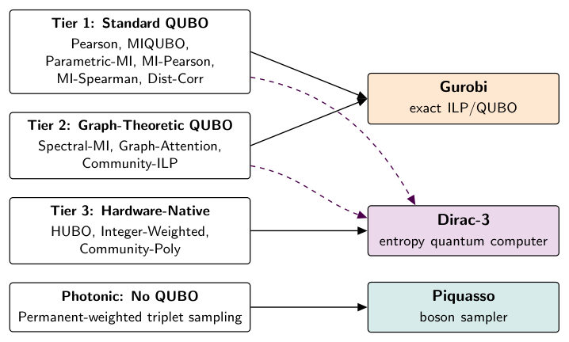
<figcaption class="paper-figure-caption"><b>Fig 1.</b> Figure 1: Solver-aware method routing: each tier is assigned to the solver that handles its mathematical structure exactly (solid arrows). Tier 1 and Tier 2 QUBO methods are also run on Dirac-3 for a direct, method-matched comparison (dashed arrows).</figcaption>
</figure>
<figure class="paper-figure-card">
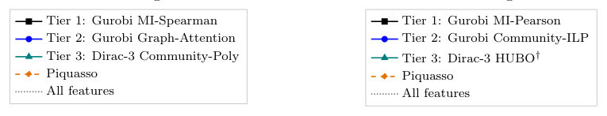
<figcaption class="paper-figure-caption"><b>Fig 2.</b> Figure 2: F1 versus feature budget k for the best solver and method in each tier, together with Piquasso. For each tier, the line shows the solver–method pair with the highest F1 at any budget (Table 4; ties broken by the smaller k, then by the higher mean F1 across budgets), plotted at every budget. Dirac-3 values are five-run means with 95% CI error bars; Gurobi values are deterministic and Piquasso values were identical across repeated runs. The dotted line is the all-features model. †AmEx Tier 3 uses the 135-feature pre- filtered pool, so its largest budget is k=130.</figcaption>
</figure>
<figure class="paper-figure-card">
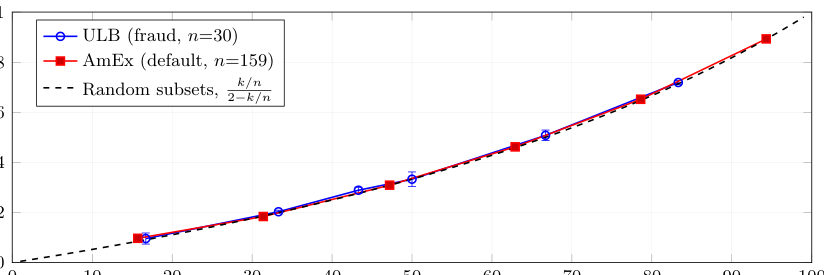
<figcaption class="paper-figure-caption"><b>Fig 3.</b> Figure 3: Mean off-diagonal Jaccard similarity among QUBO/Graph feature-selection methods as a func- tion of relative feature budget k/n, for ULB and AmEx. Error bars show 95% CI across five independent Dirac-3 runs (Tables 15 and 16). The dashed line is the expected similarity between two random subsets of the same size (Eq. 9). Both datasets lie on this curve at every tested budget, so cross-method overlap does not separate them.</figcaption>
</figure>
</div>

<p><strong>Summary.</strong> This paper compares classical and photonic quantum solvers for feature selection in financial risk detection using two large datasets. It demonstrates that the choice of solver and method is critical, showing that quantum approaches can outperform classical methods when the underlying feature signal is highly concentrated. This highlights the potential role of quantum computation in solving complex, structured optimization problems in finance.</p>
<p><strong>Why it may be interesting.</strong> The work directly tests the practical utility of quantum computation (photonic solvers) for solving complex, real-world optimization problems arising in data science, providing empirical benchmarks for quantum advantage in optimization.</p>
<details>
<summary>Detailed structure</summary>
<p><strong>Main problem.</strong> The paper addresses feature selection for imbalanced financial classification tasks by comparing classical optimization methods against photonic quantum solvers.</p>
<p><strong>Main result.</strong> Photonic solvers (Dirac-3) showed superior performance over classical solvers (Gurobi) in certain scenarios, particularly when the predictive signal is highly concentrated in a small feature subset (ULB dataset).</p>
<p><strong>Method.</strong> The authors benchmarked three computing paradigms—classical branch-and-bound, photonic entropic computing, and photonic boson sampling—across various QUBO and graph-theoretic feature selection methods.</p>
<p><strong>Model / system.</strong> The model involves formulating feature selection as a combinatorial optimization problem, utilizing two financial datasets: ULB Credit Card Fraud and AmEx Consumer Default. The computational platforms include classical solvers and photonic quantum devices.</p>
<p><strong>Key observables.</strong> F1 score (primary metric), Gini Coefficient, and Jaccard similarity, used to quantify classification performance and feature redundancy.</p>
<p><strong>Important parameters / regimes.</strong> Feature budget ($k$), dataset size (30 vs. 159 features), and the specific mathematical structure of the objective function (QUBO, higher-order terms).</p>
<p><strong>Assumptions / limitations.</strong> The comparison assumes that the mathematical structure of the feature selection method dictates the appropriate quantum or classical solver, and that the performance gap between solvers is measurable.</p>
<p><strong>Figures summary.</strong> The notes reference tables and matrices showing F1 and Gini scores across various methods and feature budgets for both datasets, and similarity matrices illustrating feature overlap.</p>
<p><strong>Paper structure.</strong> The paper establishes the problem (feature selection for imbalanced data), details the datasets and the three computational paradigms (Gurobi, Dirac-3, Piquasso), systematically compares performance across multiple methods (Tier 1, 2, 3), and analyzes the dependence of performance on dataset structure and feature budget.</p>
</details>
<details>
<summary>Abstract</summary>
<p>Feature selection for imbalanced classification tasks such as credit card fraud and consumer default detection requires balancing predictive relevance, inter-feature redundancy, and computational feasibility. We benchmark three computing paradigms, classical branch-and-bound optimization (Gurobi), photonic entropy computing (QCI Dirac-3), and simulated photonic boson sampling (Piquasso), across thirteen feature-selection methods on two datasets: ULB Credit Card Fraud (30 features) and AmEx consumer default (159 features). Each method is routed to the solver matched to its mathematical structure. On ULB, Dirac-3 MI-Spearman matches the all-features model using 13 of 30 features (mean F1 0.873 +/- 0.023 over five runs, best run 0.896), and Piquasso is the best method at k=5. On AmEx, performance rises steadily with the feature budget and every paradigm approaches F1 = 0.80 only near the full feature set. Most differences between Gurobi and Dirac-3 on identical methods fall within run-to-run variation; the large gaps occur where the certified optimum generalizes poorly, most sharply for distance correlation on AmEx at k=25 (Gurobi F1 = 0.422 vs. a Dirac-3 mean of 0.746). At matched budgets, F1 varies about ten times more across methods on ULB than on AmEx, which we trace to how concentrated the predictive signal is in each feature space.</p>
</details>
<p><sub><a href="#top">↑ back to top</a></sub></p>

<p><a id="paper-2610.03026"></a></p>
<h3 id="spatiotemporal-quantum-advantages-for-rare-event-sampling"><a href="http://arxiv.org/abs/2610.03026v1">Spatiotemporal quantum advantages for rare-event sampling</a></h3>
<p><strong>Authors:</strong> Akshat Gupta, Jianjun Chen, Chengran Yang, Mile Gu, Caterina Doglioni, Jayne Thompson, Thomas J. Elliott<br>
<strong>Type:</strong> theory · <strong>Category:</strong> statistical mechanics · <strong>PDF:</strong> <a href="https://arxiv.org/pdf/2610.03026v1">https://arxiv.org/pdf/2610.03026v1</a><br>
<strong>Analysis basis:</strong> full PDF text, analyzed in chunks
<strong>Topic relevance:</strong> <code>methods for driven-dissipative</code> <strong>1/5</strong> · <code>quantum measurements</code> <strong>1/5</strong></p>
<div class="figure-strip-hint">↔ Scroll figures horizontally</div>
<div class="paper-figures-scroll">
<figure class="paper-figure-card">
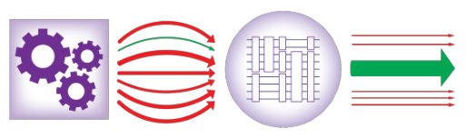
<figcaption class="paper-figure-caption"><b>Fig 1.</b> FIG. 1. Conceptual schema of our approach. A quan- tum model is used to generate a weighted superposition over all trajectories of a stochastic process, including target rare event(s). This is then fed into an algorithm that amplifies the weighting for the target rare event(s) and suppresses the rest.</figcaption>
</figure>
<figure class="paper-figure-card">
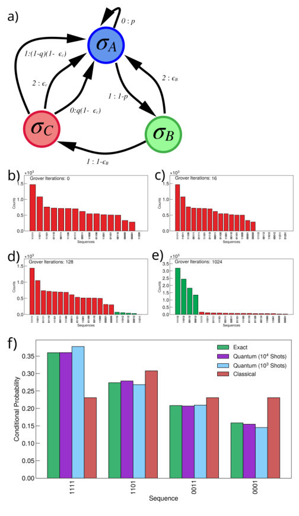
<figcaption class="paper-figure-caption"><b>Fig 2.</b> FIG. 2. (a) Hidden Markov model representation of the Nemo process with error symbols; notation x : p denotes the proba- bility p of the indicated transition occurring, accompanied by output symbol x. Progression of reweighting of rare events for (b) 0, (c) 16, (d) 128, and (e) 1024 Grover iterations; green denotes target rare events, red the remaining trajecto- ries. (f) Comparison of reconstructed conditional probabil- ities for preceding symbols to a rare event for classical and quantum approaches; sequences with multiple errors omitted due to vanishingly-small probabilities of occurrence.</figcaption>
</figure>
<figure class="paper-figure-card">
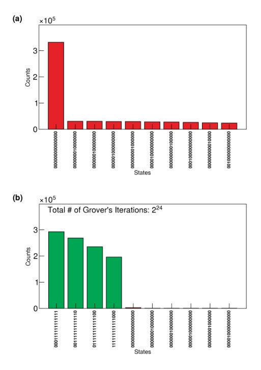
<figcaption class="paper-figure-caption"><b>Fig 3.</b> FIG. 3. Sampled trajectories for the PMD process (a) without amplification, and (b) with 224 Grover iterations; green de- notes target rare events, red the remaining trajectories. Cir- cuits evaluated with 106 shots. Plots limited to 10 highest- probability sequences. Plots of the progression of amplifica- tion are given in the Supplementary Material.</figcaption>
</figure>
</div>

<p><strong>Summary.</strong> This paper introduces a quantum algorithm to efficiently sample rare events in stochastic processes modeled by Quantum Hidden Markov Models (QHMMs). By combining quantum state preparation with Quantum Amplitude Amplification, it achieves quadratic speed-ups in time complexity and polynomial speed-ups in memory complexity over classical Monte Carlo methods. This is vital for simulating rare, high-impact phenomena in statistical physics.</p>
<p><strong>Why it may be interesting.</strong> This work provides a quantum computational tool to analyze rare, high-consequence events in stochastic physical systems, which is crucial for understanding extreme states in non-equilibrium statistical mechanics.</p>
<details>
<summary>Detailed structure</summary>
<p><strong>Main problem.</strong> The paper addresses the challenge of rare-event sampling—studying outcomes of high consequence but low probability—which is computationally prohibitive using classical methods.</p>
<p><strong>Main result.</strong> The authors propose a quantum approach that achieves simultaneous quadratic speed-ups in temporal complexity (via Quantum Amplitude Amplification) and polynomial speed-ups in spatial complexity compared to classical Monte Carlo methods.</p>
<p><strong>Method.</strong> The method integrates Quantum Hidden Markov Models (QHMMs) to prepare a quantum sample state, which is then fed into Quantum Amplitude Amplification (QAA) to boost the probability amplitude of the rare target event.</p>
<p><strong>Model / system.</strong> The framework is built upon Quantum Hidden Markov Models (QHMMs), which generalize classical HMMs using completely-positive maps. The dynamics are modeled by sequential application of unitary operators over $L$ timesteps.</p>
<p><strong>Key observables.</strong> The primary observable is the probability of the rare event, $p$, and the resulting computational complexity (time/depth and space).</p>
<p><strong>Important parameters / regimes.</strong> The rare event probability $p$, the number of timesteps $L$, the memory dimension $d$, and the size of the ancilla subspace $|X|$ are key parameters.</p>
<p><strong>Assumptions / limitations.</strong> The analysis assumes the ability to construct the quantum sample state preparation unitary $U_L$ with a depth scaling linearly with $L$, overcoming the exponential scaling of unstructured methods.</p>
<p><strong>Figures summary.</strong> Figure 1 conceptually illustrates the quantum model generating a weighted superposition of trajectories, which is then amplified by an algorithm targeting the rare event. Figure 2 shows the Nemo process, illustrating the reweighting of rare events across Grover iterations.</p>
<p><strong>Paper structure.</strong> The paper first establishes the limitations of classical rare-event sampling. It then introduces the QHMM formalism to efficiently prepare the quantum state. Finally, it combines this state preparation with QAA to demonstrate the combined spatiotemporal quantum advantage.</p>
</details>
<details>
<summary>Abstract</summary>
<p>In a world fraught with uncertainty, it behooves us to consider the most disastrous possible outcomes, in order that we can best mitigate against them. Often these are extreme risk events -- of high consequence, but low probability. Yet, the rarity of such events limits our ability to study them; there is a paucity of past occurrences to draw upon, and sampling such rare events from models is typically costly in time. Here, we introduce an approach for rare-event sampling based on quantum stochastic models. This integrates the memory advantages of quantum stochastic modelling -- and its associated efficient means of preparing quantum sample states -- with the `speed-ups' of quantum amplitude amplification, to yield simultaneous reductions in spatial and temporal computational complexity compared to classical Monte Carlo-based approaches.</p>
</details>
<p><sub><a href="#top">↑ back to top</a></sub></p>

<p><a id="paper-2610.03657"></a></p>
<h3 id="super-exponential-advantage-of-squeezed-light-in-phase-estimation-under-discrete-phase-randomisation"><a href="http://arxiv.org/abs/2610.03657v1">Super-Exponential Advantage of Squeezed Light in Phase Estimation under Discrete Phase Randomisation</a></h3>
<p><strong>Authors:</strong> Lorcan O. Conlon, V Vijendran, Aritra Das, Yu-Xin Wang, Erfan Abbasgholinejad, Anthony J. Brady, Jacob Bringewatt, Sean R. Muleady, Syed M. Assad, Alexey V. Gorshkov<br>
<strong>Type:</strong> theory · <strong>Category:</strong> other · <strong>PDF:</strong> <a href="https://arxiv.org/pdf/2610.03657v1">https://arxiv.org/pdf/2610.03657v1</a><br>
<strong>Analysis basis:</strong> full PDF text, analyzed in chunks
<strong>Topic relevance:</strong> <code>quantum measurements</code> <strong>1/5</strong> · <code>quantum optics experiment</code> <strong>1/5</strong></p>
<div class="figure-strip-hint">↔ Scroll figures horizontally</div>
<div class="paper-figures-scroll">
<figure class="paper-figure-card">
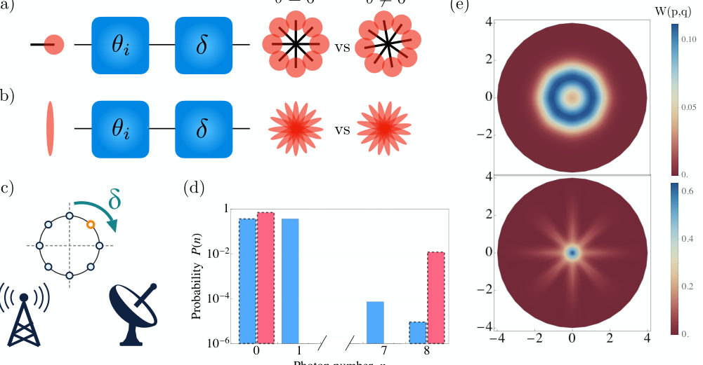
<figcaption class="paper-figure-caption"><b>Fig 1.</b> FIG. 1: Phase estimation in a ZM phase twirling channel. (a), (b) Estimation with coherent states and squeezed vacuum states respectively. The task is to determine δ in the presence of a randomised rotation θi. (c) One possible applica- tion of this work is the calibration of quantum communication networks. (d) Photon number distribution of coherent states (yellow) and squeezed vacuum states (purple) for mean photon number of 1. (e) Wigner functions of a coherent state and squeezed vacuum state after passing through a channel with M = 8 rotations. Both states have a mean photon number of √</figcaption>
</figure>
<figure class="paper-figure-card">
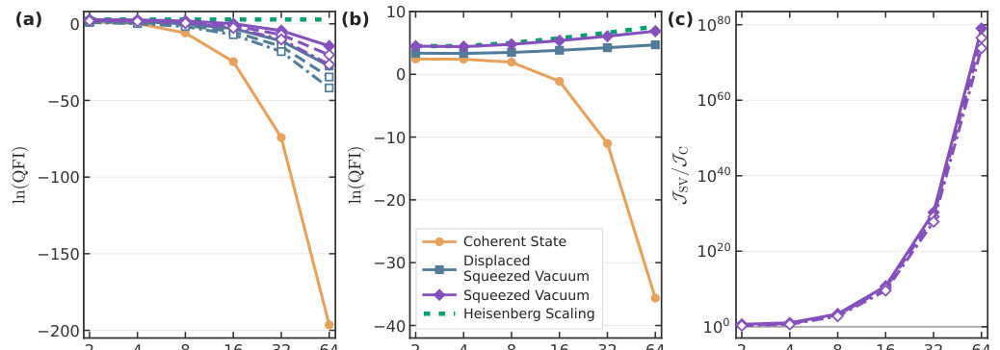
<figcaption class="paper-figure-caption"><b>Fig 2.</b> FIG. 2: Quantum Fisher information for phase estimation under phase twirling. (a) Fixed mean photon number of 1. For the coherent state α = 1, and for the displaced squeezed state α = 1/ √</figcaption>
</figure>
<figure class="paper-figure-card">
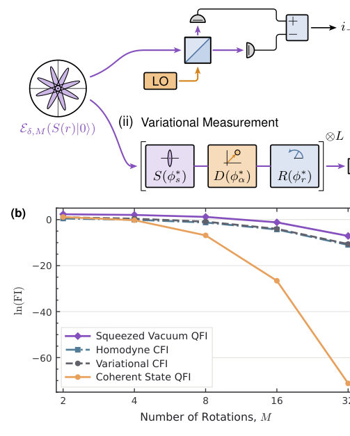
<figcaption class="paper-figure-caption"><b>Fig 3.</b> FIG. 3: Feasible measurement implementation. (a i) Schematic showing homodyne detection. The input state is mixed on a 50:50 beamsplitter with a bright local oscillator (LO). (a ii) The photonic circuit used to implement a close to optimal measurement. L is the number of layers (num- ber of times the circuit is repeated), S, D and R denoting a squeezing, displacement and rotation operation respectively, and ϕ∗denotes the numerically optimised angles. (b) CFI of the measurement strategies shown in (a i) and (a ii), plotted alongside the QFI of a squeezed vacuum state and coherent state. We assume ¯nth = 0.1, η = 0.9, α = 1 for the coherent state, and for the squeezed vacuum state r =...</figcaption>
</figure>
</div>

<p><strong>Summary.</strong> This paper proves a super-exponential advantage of using squeezed vacuum states over coherent states for phase estimation when the measurement process involves discrete phase randomization. By analyzing the Quantum Fisher Information and required sample complexity, the authors show that squeezed light can achieve significantly higher precision with fewer measurements, even in the presence of noise. This highlights the profound resource advantage of non-classical quantum states in advanced quantum sensing.</p>
<p><strong>Why it may be interesting.</strong> This work pushes beyond the standard quadratic scaling limits in quantum metrology, providing concrete evidence for super-exponential advantages achievable with non-classical states like squeezed light in specific sensing tasks.</p>
<details>
<summary>Detailed structure</summary>
<p><strong>Main problem.</strong> The paper investigates the ultimate precision limits in quantum phase estimation when the measurement channel involves discrete phase randomization (twirling). It aims to demonstrate a super-exponential advantage of using squeezed light over classical coherent states for this task.</p>
<p><strong>Main result.</strong> A super-exponential separation in the Quantum Fisher Information (QFI) and required sample complexity is shown between squeezed vacuum states and coherent states, even when considering noise and loss.</p>
<p><strong>Method.</strong> The analysis involves comparing the QFI bounds derived from squeezed vacuum states versus coherent states, utilizing both asymptotic scaling arguments and non-asymptotic sample complexity bounds.</p>
<p><strong>Model / system.</strong> The system is a bosonic mode undergoing phase estimation under a channel that implements a phase shift by $2\pi k/M$ (discrete randomization) plus a small unknown phase shift $\delta$. The comparison is drawn between squeezed vacuum states and coherent states.</p>
<p><strong>Key observables.</strong> Quantum Fisher Information (QFI), Mean Squared Error (MSE), and required number of samples ($
u$).</p>
<p><strong>Important parameters / regimes.</strong> Mean photon number per channel use ($ar{n}$), the randomization parameter $M$, and the achievable accuracy $\epsilon$.</p>
<p><strong>Assumptions / limitations.</strong> The analysis is constrained by the mean photon number per channel use ($ar{n}$) and considers the effect of optical loss and thermal noise.</p>
<p><strong>Figures summary.</strong> Not specified, but the notes detail comparisons of QFI scaling and sample complexity bounds for different noise regimes.</p>
<p><strong>Paper structure.</strong> The paper builds from general QFI analysis to specific comparisons of scaling laws for squeezed vs. coherent states, culminating in non-asymptotic results considering noise and loss.</p>
</details>
<details>
<summary>Abstract</summary>
<p>A paradigmatic task in quantum metrology is that of phase estimation. For this task it is commonly believed, under reasonable assumptions about prior information, that a quadratic advantage in sensitivity is the maximum possible advantage offered by the use of quantum resources. In this work, we consider a channel that implements a phase shift by an angle $2πk/M$, where $k$ is a uniformly random unknown integer, in addition to a small unknown phase shift of interest. We show that, subject to a constraint on the mean photon number per channel use, there is a super-exponential separation between the quantum Fisher information (QFI) attainable using a squeezed vacuum state and that attainable using coherent states. This advantage holds over any state obtained from a coherent state via phase covariant channels. Specifically, when the mean photon number per channel use is 1, the ratio of their QFI grows as $Ω[(M/\sqrt{2}e)^M]$. For a mean photon number per channel use of $M/\log(M)$, the squeezed vacuum QFI is $Ω(M^{3/2}/\sqrt{\log(M)})$, whereas for a coherent state it is at most $\exp[-M\log\log(M)+O(M)]$. We complement this QFI analysis with non-asymptotic estimation results. For a mean photon number per channel use of $M/\log M$, an explicit squeezed-vacuum protocol estimates the phase to accuracy $O(1/M)$ using $O(\sqrt{M\log M})$ channel uses, whereas every coherent state protocol requires at least $\exp[M\log\log M-O(M)]$ channel uses. We consider the effects of noise and show that the ratio of their QFIs can still grow super-exponentially in $M$. Finally, under fixed optical loss and thermal noise, choosing $\bar n=M^2/(\log M)^{3/2}$ allows squeezed vacuum with heterodyne detection to achieve accuracy $O(1/M)$ using sub-polynomially many channel uses, whereas every protocol in the specified classical family requires super-polynomially many.</p>
</details>
<p><sub><a href="#top">↑ back to top</a></sub></p>

<p><a id="paper-2610.03235"></a></p>
<h3 id="two-body-control-of-noiseless-subsystems-with-mixed-math818math-representations-lifts-teleportation-above-the-classical-fidelity-limit"><a href="http://arxiv.org/abs/2610.03235v1">Two-body control of noiseless subsystems with mixed $SU(3)$ representations lifts teleportation above the classical fidelity limit</a></h3>
<p><strong>Authors:</strong> Otavio A. D. Molitor, Sergii Strelchuk, Michał Studziński<br>
<strong>Type:</strong> theory · <strong>Category:</strong> quantum information and computing · <strong>PDF:</strong> <a href="https://arxiv.org/pdf/2610.03235v1">https://arxiv.org/pdf/2610.03235v1</a><br>
<strong>Analysis basis:</strong> full PDF text, analyzed in chunks
<strong>Topic relevance:</strong> <code>correlated / nonlocal dissipation</code> <strong>1/5</strong> · <code>quantum measurements</code> <strong>1/5</strong></p>
<div class="figure-strip-hint">↔ Scroll figures horizontally</div>
<div class="paper-figures-scroll">
<figure class="paper-figure-card">
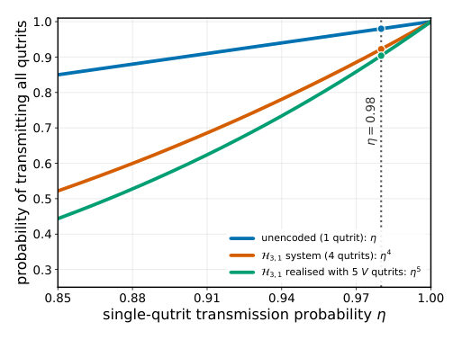
<figcaption class="paper-figure-caption"><b>Fig 1.</b> FIG. 2. Probability that every required qutrit arrives when each transmitted qutrit arrives independently with probability η. The unencoded protocol uses one physical qutrit. The encoded protocol uses four with direct access to both transfor- mation rules, or five when an antisymmetric pair represents a dual qutrit. At η = 0.98, the probabilities are 0.98, 0.922368, and 0.903921, respectively. Preparation, detection, and pro- cessing failures are excluded. These transmission probabilities are separate from the fidelities in Fig. 1.</figcaption>
</figure>
<figure class="paper-figure-card">

<figcaption class="paper-figure-caption"><b>Fig 2.</b> FIG. 1. Recovery of entanglement transmission through en- coding. In the darker interval [3/4, 55/64), the unencoded tele- portation channel is entanglement breaking, while the encoded channel exceeds the classical fidelity bound and can preserve entanglement. The curves use F (0) u = 29/30, F (0) enc = 13/15, and µ = 0.20. The lighter shading begins at 14/19, where the unencoded fidelity reaches 1/2. Fidelities are averaged over accepted trials under the assumptions of Sec. IV C.</figcaption>
</figure>
<figure class="paper-figure-card">
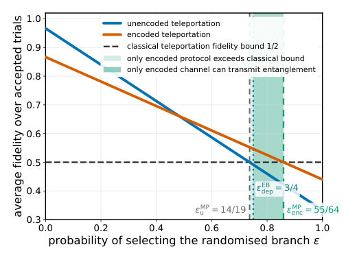
<figcaption class="paper-figure-caption"><b>Fig 3.</b> Figure 2 shows the cost of using additional qutrits. Re- lated transmission costs and ways of reducing them have been studied in photonic DFS experiments [8, 9].</figcaption>
</figure>
</div>

<p><strong>Summary.</strong> This paper proves that by utilizing two-body interactions on qutrits encoded in noiseless subsystems, one can achieve full logical control over the encoded quantum information. This capability is then applied to quantum teleportation, showing that the encoded protocol can maintain a fidelity above the classical limit, even when the unencoded channel fails to transmit entanglement.</p>
<p><strong>Why it may be interesting.</strong> It provides a concrete, mathematically rigorous demonstration of how structured noise environments and specific physical interactions (two-body gates) can be harnessed to protect and enhance quantum communication protocols beyond classical limits.</p>
<details>
<summary>Detailed structure</summary>
<p><strong>Main problem.</strong> To demonstrate that two-body control over noiseless subsystems encoded in mixed SU(3) representations can enable quantum teleportation fidelity to surpass the classical limit.</p>
<p><strong>Main result.</strong> The system achieves semi-universality in logical gate control, and under specific noise conditions, the encoded teleportation fidelity exceeds the classical bound of 1/2 while the unencoded channel is entanglement breaking.</p>
<p><strong>Method.</strong> The analysis uses Lie-algebra arguments and the structure of the walled Brauer algebra to prove the existence of finite pulse sequences implementing arbitrary logical gates.</p>
<p><strong>Model / system.</strong> The system involves $r$ fundamental qutrits transforming under $U \in SU(3)$ and $s$ dual qutrits under $\overline{U}$. Information is encoded in noiseless subsystems derived from the global Hilbert space $H_{r,s}$.</p>
<p><strong>Key observables.</strong> Teleportation fidelity ($F$), entanglement status, and the deviation measure $\varepsilon_\diamond$ from the identity channel.</p>
<p><strong>Important parameters / regimes.</strong> The number of fundamental ($r$) and dual ($s$) qutrits, and the specific noise parameters defining the Weyl mixture.</p>
<p><strong>Assumptions / limitations.</strong> The analysis relies on explicit assumptions regarding channel composition, which trials are retained, and accounts for baseline implementation errors.</p>
<p><strong>Figures summary.</strong> Not specified, but the analysis compares resources and fidelity bounds for unencoded versus encoded protocols.</p>
<p><strong>Paper structure.</strong> The paper progresses from establishing the physical model and the semi-universality of logical gate control using two-body interactions, to applying this framework to analyze and bound the fidelity of quantum teleportation under correlated Weyl noise.</p>
</details>
<details>
<summary>Abstract</summary>
<p>Collective noise can leave degrees of freedom unaffected, allowing them to store quantum information. Processing this information also requires physically available logical gates. We consider $r$ fundamental qutrits transforming under $U\in SU(3)$ and $s$ dual qutrits transforming under its complex conjugate $\overline U$, with collective action $R_{r,s}(U)=U^{\otimes r}\otimes\overline U^{\otimes s}$. Using the image of the walled Brauer algebra and Lie-algebra arguments, we show that adjacent exchanges within each qutrit type and one singlet-projector interaction between the two types generate any independently chosen family of special unitary gates on the noiseless subsystems by a finite pulse sequence, for every $r,s\geq1$. This establishes semi-universality of this system. We illustrate the result with a numerically optimised sequence of 24 pulses for three fundamental qutrits and one dual qutrit. We then use the encoding and available logical corrections for qutrit teleportation under correlated Weyl noise. Under explicit assumptions on channel composition and which trials are retained, and allowing for baseline implementation errors, we identify noise ranges in which encoded teleportation exceeds the classical fidelity bound of $1/2$, while the unencoded teleportation channel is entanglement breaking. We analyse fidelity on accepted trials separately from the transmission costs of the additional physical qutrits.</p>
</details>
<p><sub><a href="#top">↑ back to top</a></sub></p>

<p><a id="paper-2610.03545"></a></p>
<h3 id="what-must-a-quantum-memory-decoder-know-about-temporally-correlated-noise"><a href="http://arxiv.org/abs/2610.03545v1">What Must a Quantum-Memory Decoder Know About Temporally Correlated Noise?</a></h3>
<p><strong>Authors:</strong> Danesh Morales-Hashemi, Graeme Smith, Ningping Cao<br>
<strong>Type:</strong> theory · <strong>Category:</strong> quantum information and computing · <strong>PDF:</strong> <a href="https://arxiv.org/pdf/2610.03545v1">https://arxiv.org/pdf/2610.03545v1</a><br>
<strong>Analysis basis:</strong> full PDF text, analyzed in chunks
<strong>Topic relevance:</strong> <code>correlated / nonlocal dissipation</code> <strong>1/5</strong> · <code>quantum measurements</code> <strong>1/5</strong></p>
<div class="figure-strip-hint">↔ Scroll figures horizontally</div>
<div class="paper-figures-scroll">
<figure class="paper-figure-card">
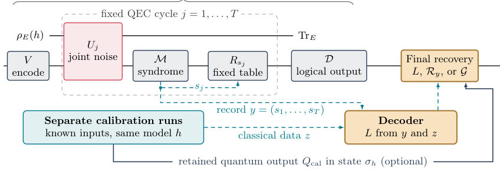
<figcaption class="paper-figure-caption"><b>Fig 1.</b> FIG. 1. Memory experiment with prescribed cycle corrections Rsj and a final recovery chosen from the full syndrome record y and calibration transcript z. Yellow marks the decoder and its final recovery, the subject of this paper. Known interactions Uj couple the encoded system to an unobserved environment initially in ρE(h), M extracts the syndrome sj in cycle j = 1, . . . , T, and D returns the residual logical output before final recovery. The logical input and recovered output are ρL and ρ′ L. The brace marks the recorded logical instrument Φh [Eq. (1)]. The decoder applies a Pauli correction L with probability d(L | y), or more generally a CPTP recovery Ry. Calibration runs share the...</figcaption>
</figure>
<figure class="paper-figure-card">
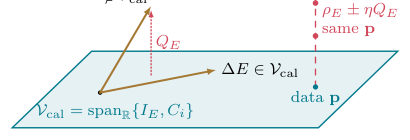
<figcaption class="paper-figure-caption"><b>Fig 2.</b> FIG. 2. Geometry of Proposition 1 in Herm(HE) with the Hilbert–Schmidt inner product. Since every calibration proba- bility has the form Tr(ρECi), the data p fix only the orthogo- nal projection of ρE onto the calibration span Vcal [Eq. (8)], marked p, and all states on the dashed line give the same data. If ∆E = ∆Ey;L,L′ [Eq. (7)] lies in Vcal, the score difference Tr(ρE∆E) is constant along this line, so the data determine it. Otherwise ∆E has a nonzero orthogonal component QE, and for full-rank ρE and small η the states ρE ± ηQE give the same data but different score differences.</figcaption>
</figure>
<figure class="paper-figure-card">
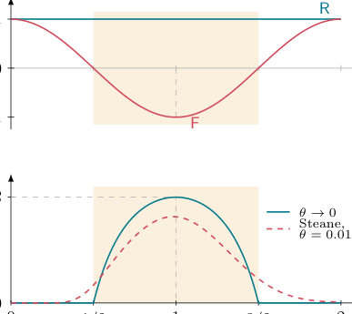
<figcaption class="paper-figure-caption"><b>Fig 3.</b> FIG. 3. Mean logical readout and minimax fidelity loss versus storage time, where Tπ [Eq. (26)] is the time at which the fixed sign accumulates a logical π rotation. (a) Mean readout of a ¯Z = +1 input before final recovery, in the fixed-code weak- noise limit at fixed T/Tπ. It approaches cos(πT/Tπ) under F and one under R, although the syndrome statistics and SPPs coincide. (b) Full-record minimax fidelity loss in the same limit (solid) and for the Steane code at θ = 0.01 (dashed). In the shaded interval, the F readout is negative and the limiting optimal corrections differ. At T/Tπ = 3/4 the finite-angle loss is 0.3146, against the limit 0.4142. At T/Tπ = 1/2 it is about 56% of the...</figcaption>
</figure>
<figure class="paper-figure-card">
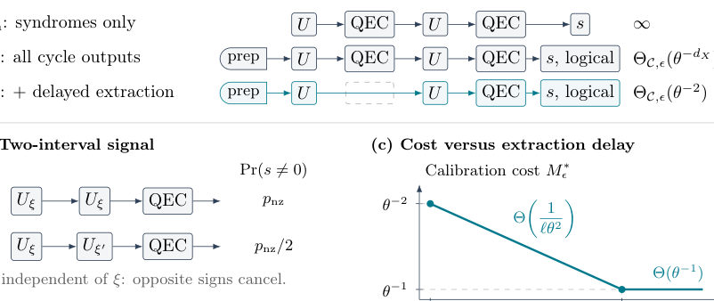
<figcaption class="paper-figure-caption"><b>Fig 4.</b> FIG. 4. Calibration for the fixed data circuit at storage time Tπ, with fixed code and target loss 0 &lt; ϵ &lt; 1/2, as θ →0. (a) Each U costs one noise interval, and QEC is one syndrome extraction followed by the fixed lookup-table correction. A delayed-extraction query omits the intermediate QEC step (dashed). Outputs are the syndrome s and, where shown, the logical output, which may be measured or retained. The known-state preparations (prep) are those used by the protocols attaining the upper bounds. Sec. V A specifies the more general operations, retained outputs, and source resets that the classes permit. All classes receive the same SPP. (b) Under R, independent signs cancel in half of...</figcaption>
</figure>
</div>

<p><strong>Summary.</strong> This paper analyzes the theoretical requirements for quantum error-correcting decoders operating under temporally correlated noise. It compares two noise models—one with a fixed global sign and one with independently resampled signs—showing that while their syndrome statistics match, their optimal recovery strategies differ. The work establishes scaling laws for the required experimental resources (calibration) to maintain high fidelity.</p>
<p><strong>Why it may be interesting.</strong> It provides rigorous theoretical bounds on the information required to mitigate complex, time-dependent noise in quantum memory, which is crucial for scaling up quantum computation.</p>
<details>
<summary>Detailed structure</summary>
<p><strong>Main problem.</strong> The paper investigates what information about temporally correlated noise a quantum error-correction (QEC) decoder must possess to achieve optimal recovery, and quantifies the cost of learning this information.</p>
<p><strong>Main result.</strong> The optimal cost for complete QEC cycles scales inversely with the rotation angle raised to the code's X distance, and the authors prove matching calibration bounds for two different noise models (fixed vs. resampled signs).</p>
<p><strong>Method.</strong> The analysis uses a statistical decision theory framework, formulating calibration in terms of fidelity differences and employing process tensors to model the full quantum evolution.</p>
<p><strong>Model / system.</strong> The study uses fixed stabilizer memory experiments with CSS codes (e.g., Shor, Steane, surface codes) subjected to weak coherent X rotations, comparing two noise models: one where all qubits share a fixed sign, and one where the sign is redrawn independently each interval.</p>
<p><strong>Key observables.</strong> Entanglement fidelity ($F$), fidelity loss ($\Delta F$), syndrome record ($y$), and the logical rotation accumulated over time.</p>
<p><strong>Important parameters / regimes.</strong> The noise correlation structure (fixed vs. resampled signs), the code's X distance ($d_X$), and the rotation angle ($ heta$).</p>
<p><strong>Assumptions / limitations.</strong> The analysis assumes the ability to characterize the noise process via syndrome measurements and uses the Spatiotemporal Pauli Process (SPP) as a complete description for randomized errors.</p>
<p><strong>Figures summary.</strong> Figure 1 illustrates the memory experiment flow, detailing the sequence from encoding, noise intervals, syndrome measurement, correction, and final recovery, alongside calibration runs.</p>
<p><strong>Paper structure.</strong> The paper develops a general framework using process tensors to describe the logical instrument, then focuses on comparing the performance and required calibration data for different noise models (F vs. R) to determine the minimum information needed for optimal decoding.</p>
</details>
<details>
<summary>Abstract</summary>
<p>What must a quantum error-correction decoder know about temporally correlated noise, and what does it cost to learn? We study this question for fixed stabilizer memory experiments with known system-environment interactions. We formulate calibration in terms of the fidelity differences that select a Pauli recovery and relate missing information to the resulting fidelity loss. Our main example uses weak coherent $X$ rotations in a class of CSS codes including Shor, Steane, and odd-distance rotated surface codes. All physical qubits share a sign either fixed throughout a run or independently redrawn each interval. The two models have identical syndrome statistics and the same spatiotemporal Pauli process (SPP), obtained by Pauli-twirling every noise interval. Yet at suitable storage times, they require different logical corrections. In the weak-noise limit, each model is almost perfectly correctable when known. Without model information, even the best final recovery has a worst-case fidelity loss approaching $1/2$ relative to the noise-aware optimum, despite access to the full syndrome record. For this pair of models, at fixed code and fixed positive target loss below $1/2$, we prove matching calibration bounds. With logical preparation and final readout, complete QEC cycles require a number of noise intervals scaling as the inverse rotation angle raised to the code's $X$ distance. Allowing two uninterrupted intervals before one extraction reduces the optimal cost to inverse-square scaling. Physical Pauli twirling of every noise interval changes both recovery performance and its information requirements. Discarding the record of applied random Pauli operations makes the SPP sufficient for optimal recovery. Keeping this record can improve the attainable fidelity, but reaching that optimum may require additional noise information.</p>
</details>
<p><sub><a href="#top">↑ back to top</a></sub></p>

<p><a id="paper-2610.03584"></a></p>
<h3 id="a-complete-proof-of-math843math-hardness-for-weighted-gapped-clique-homology"><a href="http://arxiv.org/abs/2610.03584v1">A Complete Proof of $\mathsf{QMA}_1$-Hardness for Weighted Gapped Clique Homology</a></h3>
<p><strong>Authors:</strong> Tal Barak<br>
<strong>Type:</strong> theory · <strong>Category:</strong> quantum information and computing · <strong>PDF:</strong> <a href="https://arxiv.org/pdf/2610.03584v1">https://arxiv.org/pdf/2610.03584v1</a><br>
<strong>Analysis basis:</strong> full PDF text, analyzed in chunks
<strong>Topic relevance:</strong> <code>analog quantum simulation</code> <strong>1/5</strong></p>
<div class="figure-strip-hint">↔ Scroll figures horizontally</div>
<div class="paper-figures-scroll">
<figure class="paper-figure-card">
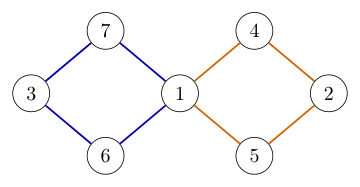
<figcaption class="paper-figure-caption"><b>Fig 1.</b> Figure 3: The single-qubit bow-tie graph. The left four-cycle represents z0 and the right four-cycle represents z1. The cycles share the vertex 1 but have no edge in common.</figcaption>
</figure>
<figure class="paper-figure-card">
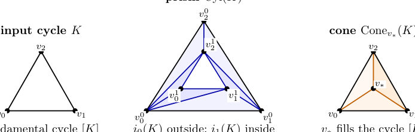
<figcaption class="paper-figure-caption"><b>Fig 2.</b> Figure 4. Prism and cone over the triangle boundary, used here as a simplicial example with source order v0 &lt; v1 &lt; v2. The planar annulus displays the prism’s six triangles and two boundary copies. The cone is the filled triangle with apex at its centre.</figcaption>
</figure>
<figure class="paper-figure-card">
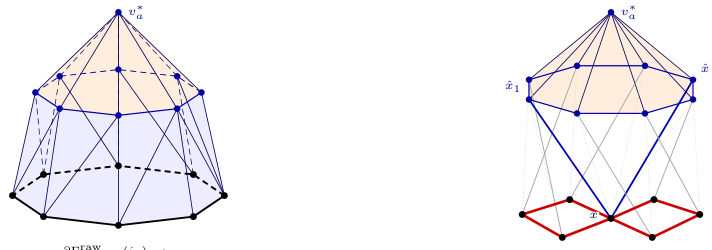
<figcaption class="paper-figure-caption"><b>Fig 3.</b> Figure 5: An illustration of the single-qubit example in [KK24, Section 8.3.2], drawn in four stages of the prism-cone-fold construction for the target line C(|0⟩−|1⟩). In the first panel, the two distinct source vertices ˆx and ˆx1 are both sent to the shared bow-tie vertex x. The image of the oriented source cycle is therefore z0 −z1 = ja. The second panel joins a bottom and a top copy of Ka by a simplicial prism. In the third panel, the cone fills the top copy, leaving the bottom copy as the only boundary. The fourth panel attaches that bottom boundary to X1 by fa. Consequently, the resulting chain satisfies ∂Γa = ja. Black vertices belong to the bow-tie base, blue vertices are private,...</figcaption>
</figure>
</div>

<p><strong>Summary.</strong> This paper provides a complete and rigorous proof that determining the homology of weighted, spectrally gapped clique complexes is $\mathsf{QMA}_1$-hard. It achieves this by meticulously re-analyzing the local topological structures and spectral properties involved in the reduction from a known hard problem. The result establishes a strong computational barrier for simulating quantum systems based on topological features.</p>
<p><strong>Why it may be interesting.</strong> This work connects deep topological invariants (homology) directly to the computational hardness of quantum physics problems, providing a rigorous complexity measure for quantum simulation feasibility.</p>
<details>
<summary>Detailed structure</summary>
<p><strong>Main problem.</strong> The paper aims to establish the computational complexity of determining non-trivial homology in weighted, spectrally gapped clique complexes.</p>
<p><strong>Main result.</strong> Weighted gapped clique homology is proven to be $\mathsf{QMA}_1(\mathcal G)$-hard, providing a complete proof that resolves a gap in previous hardness results.</p>
<p><strong>Method.</strong> The proof uses exact finite certificates and relative homology to analyze the local topology of gadgets, culminating in a quantitative global estimate that links the source-Hamiltonian gap to the weighted Hodge Laplacian.</p>
<p><strong>Model / system.</strong> The model involves clique complexes derived from graphs, where the existence of a topological hole (non-trivial homology) is mapped to the existence of a zero-energy state in the Hodge Laplacian ($\Delta_k$).</p>
<p><strong>Key observables.</strong> The existence of a zero eigenvalue in the Hodge Laplacian ($\Delta_k$) corresponding to a topological hole, and the quantitative spectral gap ($\gamma(n)$) for 'NO' instances.</p>
<p><strong>Important parameters / regimes.</strong> The hardness holds for fixed efficiently computable $k(n)$ and inverse-polynomial $\gamma(n)$.</p>
<p><strong>Assumptions / limitations.</strong> The argument requires a new, detailed analysis of the local topology and filtered cochain complexes to correct an analytical gap in prior work.</p>
<p><strong>Figures summary.</strong> Not specified, but the notes detail the structure of matrices, rank checks, and specific identities required for the local gadget constructions.</p>
<p><strong>Paper structure.</strong> The paper progresses from defining the problem (homology complexity) to detailing the reduction structure, using exact finite certificates for local data, proving a finite-dimensional filtered-Hodge statement, and finally deriving the global spectral estimate and the main $\mathsf{QMA}_1$-hardness theorem.</p>
</details>
<details>
<summary>Abstract</summary>
<p>The computational complexity of simplicial homology has been studied since the question was raised by Kaibel and Pfetsch, and clique homology was later shown to be $\mathsf{QMA}_1$-hard by Crichigno and Kohler. King and Kohler subsequently introduced the weighted, spectrally gapped version considered here and developed a reduction intended to establish the same hardness result in this setting.   We give a complete proof of the hard direction. The earlier King-Kohler argument contains a gap in the analysis of the nontrivially folded local gadgets, so the required topological and spectral properties have to be re-established on the clique complexes actually produced by the reduction. This is not a local repair of the published proof: the argument requires a new analysis of the local topology, the filtered cochain complexes, and the interaction of many overlapping gadgets.   Our proof uses exact finite certificates for the local combinatorial data and relative homology to determine the effect of each gadget on the encoded qubit space. We then prove the finite-dimensional filtered-Hodge statement needed to recover the corresponding rank-one low-energy penalty and derive a quantitative global estimate that transfers the source-Hamiltonian promise gap to the final weighted Hodge Laplacian. Consequently, for fixed efficiently computable $k(n)$ and inverse-polynomial $γ(n)$, weighted gapped clique homology is $\mathsf{QMA}_1(\mathcal G)$-hard. The previously known $\mathsf{QMA}$-containment argument is logically independent of the gap and remains unaffected.</p>
</details>
<p><sub><a href="#top">↑ back to top</a></sub></p>

<p><a id="paper-2610.03658"></a></p>
<h3 id="a-note-on-tomography-of-states-with-low-stabilizer-rank"><a href="http://arxiv.org/abs/2610.03658v1">A note on tomography of states with low stabilizer rank</a></h3>
<p><strong>Authors:</strong> Arkopal Dutt<br>
<strong>Type:</strong> theory · <strong>Category:</strong> quantum information and computing · <strong>PDF:</strong> <a href="https://arxiv.org/pdf/2610.03658v1">https://arxiv.org/pdf/2610.03658v1</a><br>
<strong>Analysis basis:</strong> full PDF text, analyzed in chunks
<strong>Topic relevance:</strong> <code>quantum measurements</code> <strong>1/5</strong></p>
<div class="figure-strip-hint">↔ Scroll figures horizontally</div>
<div class="paper-figures-scroll">
<figure class="paper-figure-card">
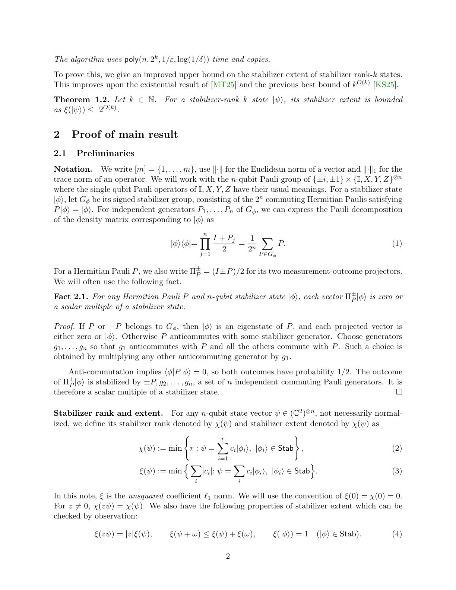
<figcaption class="paper-figure-caption"><b>Fig 1.</b> Low-resolution page preview, page 2</figcaption>
</figure>
<figure class="paper-figure-card">
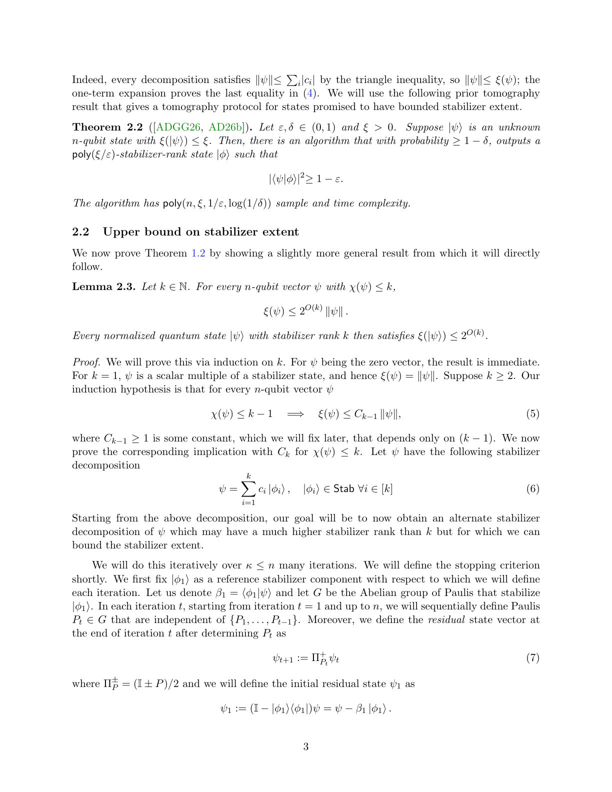
<figcaption class="paper-figure-caption"><b>Fig 2.</b> Low-resolution page preview, page 3</figcaption>
</figure>
<figure class="paper-figure-card">
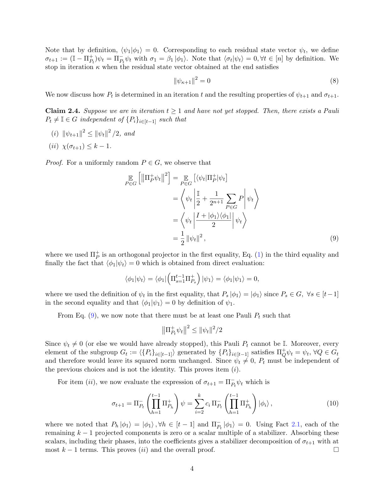
<figcaption class="paper-figure-caption"><b>Fig 3.</b> Low-resolution page preview, page 4</figcaption>
</figure>
<figure class="paper-figure-card">
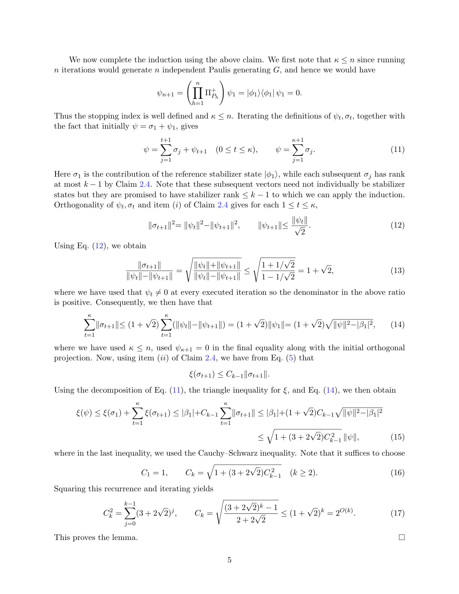
<figcaption class="paper-figure-caption"><b>Fig 4.</b> Low-resolution page preview, page 5</figcaption>
</figure>
<figure class="paper-figure-card">
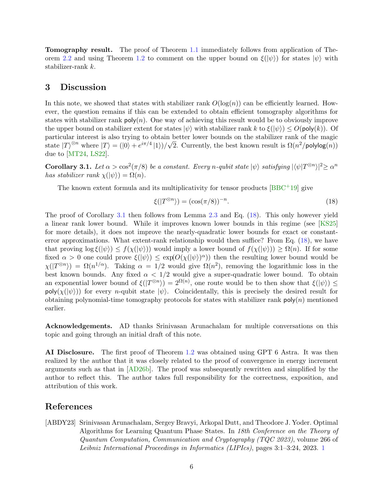
<figcaption class="paper-figure-caption"><b>Fig 5.</b> Low-resolution page preview, page 6</figcaption>
</figure>
</div>

<p><strong>Summary.</strong> This paper develops an efficient quantum state tomography protocol for $n$-qubit states whose structure is limited by a low stabilizer rank $k$. The authors achieve this by first proving a tight upper bound on the state's 'stabilizer extent' ($\xi(|\psi
angle) \leq 2^{O(k)}$). This result allows for polynomial-time reconstruction of the state, provided the rank $k$ scales slowly with the number of qubits, such as $k=O(\log n)$.</p>
<p><strong>Why it may be interesting.</strong> This work provides concrete algorithmic tools for characterizing and reconstructing quantum states whose structure is constrained by low-rank properties, which is relevant for understanding resource estimation in quantum computation.</p>
<details>
<summary>Detailed structure</summary>
<p><strong>Main problem.</strong> The paper addresses the development of an efficient quantum state tomography protocol for $n$-qubit states $|\psi
angle$ that are known to possess a low stabilizer rank $k$.</p>
<p><strong>Main result.</strong> It establishes that for such states, the stabilizer extent $\xi(|\psi
angle)$ is bounded by $2^{O(k)}$, leading to a polynomial-time tomography protocol for states where $k=O(\log n)$.</p>
<p><strong>Method.</strong> The approach involves bounding the stabilizer extent $\xi(|\psi
angle)$ using induction and Pauli operator projections, which then allows the application of an existing tomography protocol for states with bounded extent.</p>
<p><strong>Model / system.</strong> The system under study is general $n$-qubit quantum states $|\psi
angle$ that are restricted to having a stabilizer decomposition involving at most $k$ stabilizer states.</p>
<p><strong>Key observables.</strong> Stabilizer rank ($k$), Stabilizer extent ($\xi(|\psi
angle)$), and the fidelity of the reconstructed state.</p>
<p><strong>Important parameters / regimes.</strong> The time complexity depends polynomially on $n$, $k$, and $1/\epsilon$. The efficiency is highlighted for $k=O(\log n)$.</p>
<p><strong>Assumptions / limitations.</strong> The protocol assumes the input state $|\psi
angle$ is promised to have a stabilizer rank $k$, and it relies on a pre-existing tomography protocol for states with bounded stabilizer extent.</p>
<p><strong>Paper structure.</strong> The paper first proves a key bound on the stabilizer extent $\xi(|\psi
angle) \leq 2^{O(k)}$ for a rank $k$ state. It then utilizes this bound to construct a full tomography protocol, showing efficiency for low-rank states.</p>
</details>
<details>
<summary>Abstract</summary>
<p>In this note, we consider tomography of $n$-qubit quantum states $|ψ\rangle$ that are promised to have stabilizer rank $k$ i.e., admit a stabilizer decomposition of $|ψ\rangle = \sum_{i=1}^k c_i |φ_i\rangle$ where each $|φ_i\rangle$ is a stabilizer state. We give a tomography protocol for such states up to trace distance $\varepsilon > 0$ running in $\textsf{poly}(n,2^k,1/\varepsilon)$ time and thus can handle $k=O(\log n)$ efficiently. This follows from first showing that the stabilizer extent $ξ(|ψ\rangle)$, which is the minimal $\ell_1$ norm over the coefficients $\{c_i\}$ of any stabilizer decomposition of $|ψ\rangle$, can be bounded as $ξ(|ψ\rangle) \leq 2^{O(k)}$ and improving upon the previous best bound of $k^{O(k)}$. The protocol is then obtained by utilizing a tomography protocol for states with bounded stabilizer extent.</p>
</details>
<p><sub><a href="#top">↑ back to top</a></sub></p>

<p><a id="paper-2610.03670"></a></p>
<h3 id="classical-algorithms-for-bipartite-quantum-max-cut-on-dense-expanders"><a href="http://arxiv.org/abs/2610.03670v1">Classical Algorithms for Bipartite Quantum Max-Cut on Dense Expanders</a></h3>
<p><strong>Authors:</strong> Stuart Wayland, Zackary Jorquera, Alexandra Kolla<br>
<strong>Type:</strong> theory · <strong>Category:</strong> statistical mechanics · <strong>PDF:</strong> <a href="https://arxiv.org/pdf/2610.03670v1">https://arxiv.org/pdf/2610.03670v1</a><br>
<strong>Analysis basis:</strong> full PDF text, analyzed in chunks
<strong>Topic relevance:</strong> <code>analog quantum simulation</code> <strong>1/5</strong></p>
<div class="figure-strip-hint">↔ Scroll figures horizontally</div>
<div class="paper-figures-scroll">
<figure class="paper-figure-card">
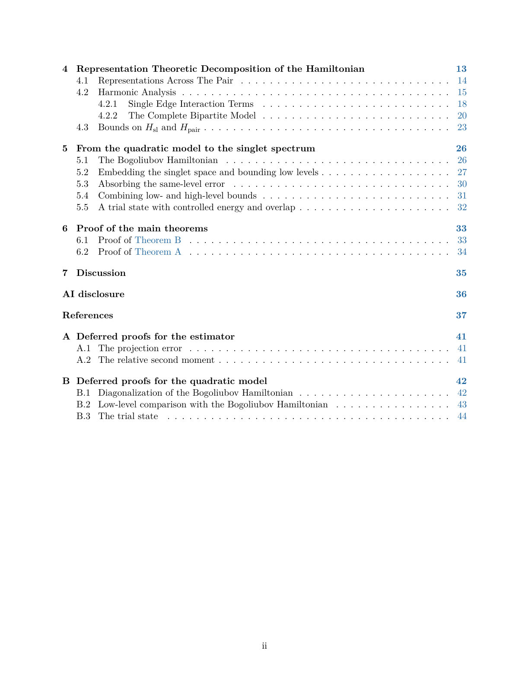
<figcaption class="paper-figure-caption"><b>Fig 1.</b> Low-resolution page preview, page 2</figcaption>
</figure>
<figure class="paper-figure-card">
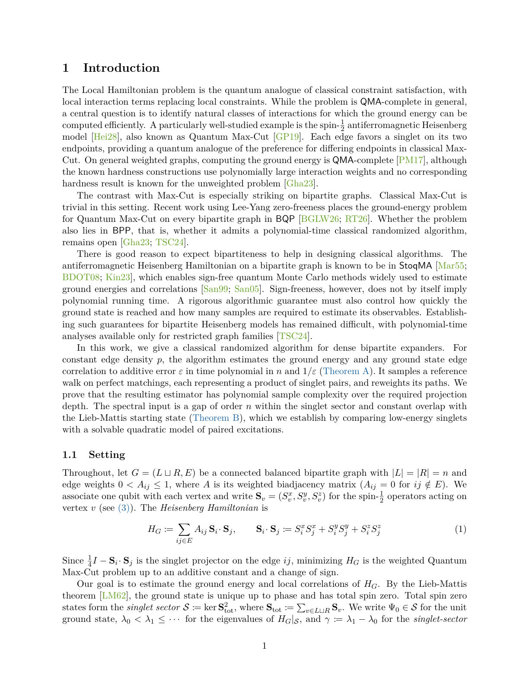
<figcaption class="paper-figure-caption"><b>Fig 2.</b> Low-resolution page preview, page 3</figcaption>
</figure>
<figure class="paper-figure-card">
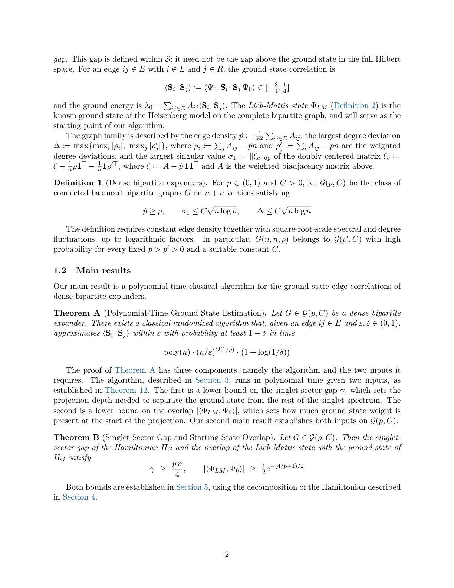
<figcaption class="paper-figure-caption"><b>Fig 3.</b> Low-resolution page preview, page 4</figcaption>
</figure>
<figure class="paper-figure-card">
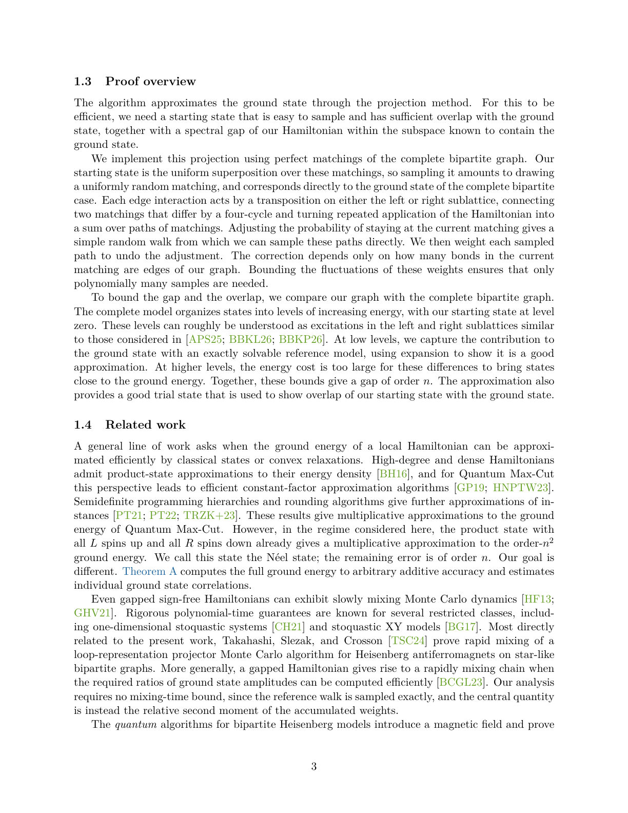
<figcaption class="paper-figure-caption"><b>Fig 4.</b> Low-resolution page preview, page 5</figcaption>
</figure>
<figure class="paper-figure-card">
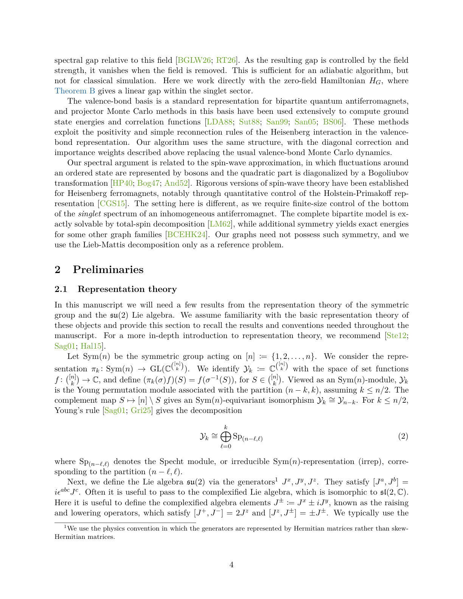
<figcaption class="paper-figure-caption"><b>Fig 5.</b> Low-resolution page preview, page 6</figcaption>
</figure>
</div>

<p><strong>Summary.</strong> This paper presents a classical randomized algorithm to estimate the ground energy and correlations for the Quantum Max-Cut problem on specific types of bipartite graphs called dense expanders. By constructing a Markov chain on perfect matchings, the authors show that the problem can be solved in polynomial time, providing a significant result for understanding the classical complexity of quantum optimization problems.</p>
<p><strong>Why it may be interesting.</strong> The connection between quantum optimization problems (like Max-Cut) and classical polynomial-time solvability is central to quantum computation and statistical physics, making this highly relevant.</p>
<details>
<summary>Detailed structure</summary>
<p><strong>Main problem.</strong> The paper addresses the classical computational complexity of finding the ground energy and local correlations for the Quantum Max-Cut problem on bipartite graphs.</p>
<p><strong>Main result.</strong> It provides a polynomial-time classical randomized algorithm to estimate ground state correlations for the spin-1/2 antiferromagnetic Heisenberg model on dense balanced bipartite expanders.</p>
<p><strong>Method.</strong> The algorithm uses a Markov chain approach on perfect matchings, leveraging graph expansion properties to ensure convergence in polynomial time.</p>
<p><strong>Model / system.</strong> The system is the spin-1/2 antiferromagnetic Heisenberg model, which is equivalent to the Quantum Max-Cut problem, studied on dense balanced bipartite expanders.</p>
<p><strong>Key observables.</strong> Ground energy ($\lambda_0$) and ground state edge correlation ($\langle \mathbf{S}_i \cdot \mathbf{S}_j 
angle$).</p>
<p><strong>Important parameters / regimes.</strong> Edge density ($\hat{p}$), graph expansion parameters ($\sigma_1, \Delta$), and the desired additive error ($\epsilon$).</p>
<p><strong>Assumptions / limitations.</strong> The analysis relies on the graph being a dense balanced bipartite expander, and the algorithm's complexity depends on the graph structure.</p>
<p><strong>Paper structure.</strong> The paper establishes the context of the open problem, defines the model using singlet matchings, details the randomized algorithm, and proves the main theorems regarding ground state estimation and gap bounds.</p>
</details>
<details>
<summary>Abstract</summary>
<p>Quantum Max-Cut is a well-studied local Hamiltonian problem for which the classical complexity of the bipartite case remains open. We give a polynomial-time classical randomized algorithm for the spin-$\tfrac12$ antiferromagnetic Heisenberg model, equivalently Quantum Max-Cut, on dense balanced bipartite expanders. This class includes $G(n,n,p)$ with high probability for every fixed $p>0$. The algorithm estimates the ground energy and any ground state edge correlation to additive error $\varepsilon$ in time polynomial in $n$ and $1/\varepsilon$. We construct a Markov chain on perfect matchings of the complete bipartite graph, each matching representing a product of singlets, that converges to the ground state, and use the expansion of the graph to show that polynomially many steps and samples of this chain suffice.</p>
</details>
<p><sub><a href="#top">↑ back to top</a></sub></p>

<p><a id="paper-2610.03590"></a></p>
<h3 id="constant-rate-certified-deletion"><a href="http://arxiv.org/abs/2610.03590v1">Constant-Rate Certified Deletion</a></h3>
<p><strong>Authors:</strong> Kai-Min Chung, Tzu-Hsiang Huang, Wei-Hsiang Hung, Shota Yamada<br>
<strong>Type:</strong> theory · <strong>Category:</strong> quantum information and computing · <strong>PDF:</strong> <a href="https://arxiv.org/pdf/2610.03590v1">https://arxiv.org/pdf/2610.03590v1</a><br>
<strong>Analysis basis:</strong> full PDF text, analyzed in chunks
<strong>Topic relevance:</strong> <code>quantum measurements</code> <strong>1/5</strong></p>
<div class="figure-strip-hint">↔ Scroll figures horizontally</div>
<div class="paper-figures-scroll">
<figure class="paper-figure-card">
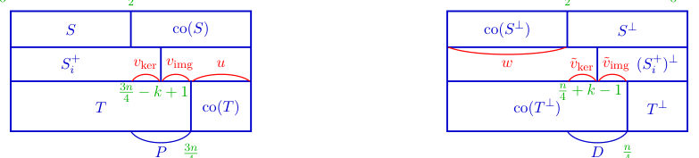
<figcaption class="paper-figure-caption"><b>Fig 1.</b> Figure 1: Coset basis decomposition. Each blue rectangle represents a vector space. An overlap between the sides of two rectangles indicates that they share a subset of basis vectors, with the size of the overlap corresponding to the dimension of the shared subspace.</figcaption>
</figure>
</div>

<p><strong>Summary.</strong> This paper introduces a breakthrough framework for achieving constant-rate certified deletion in quantum cryptography, solving a long-standing problem in the plain model. It provides efficient quantum protocols for primitives like PKE and FHE that guarantee data erasure proof without excessive resource overhead. This advances the practical feasibility of privacy-preserving quantum computation.</p>
<p><strong>Why it may be interesting.</strong> While the focus is on quantum cryptography, the techniques developed for achieving constant-rate quantum information processing are highly relevant to understanding resource constraints in quantum computation protocols.</p>
<details>
<summary>Detailed structure</summary>
<p><strong>Main problem.</strong> The paper addresses the challenge of constructing constant-rate certified deletion (CD) for quantum cryptographic primitives in the plain model, overcoming previous limitations that required a linear qubit overhead.</p>
<p><strong>Main result.</strong> The authors present a unified framework achieving the first constant-rate CD constructions for a wide range of primitives, including PKE, ABE, and FHE, and extending this to publicly verifiable schemes under the hardness of SIS.</p>
<p><strong>Method.</strong> The methodology involves adapting advanced quantum information techniques, such as using high-rate extractors and position-wise guessing, to maintain constant rate while proving the deletion property.</p>
<p><strong>Model / system.</strong> The work operates within the framework of quantum cryptography, utilizing quantum states derived from BB84-style encodings and subspace coset states to secure various primitives.</p>
<p><strong>Key observables.</strong> The primary observable is the rate of deletion, aiming for a constant rate (small qubit overhead relative to the classical plaintext size).</p>
<p><strong>Important parameters / regimes.</strong> The security parameter $\lambda$ governs the required computational security, and the rate is the key efficiency metric.</p>
<p><strong>Assumptions / limitations.</strong> The constructions rely on the underlying security assumptions of the primitives, and the final public verifiability result assumes the hardness of the Syndrome Decoding Problem (SIS).</p>
<p><strong>Paper structure.</strong> The paper builds from establishing the general constant-rate CD framework for BB84-type and coset-state primitives, then extends this to incorporate public verifiability using the SIS assumption, and finally shows how this applies to specific cryptographic constructions.</p>
</details>
<details>
<summary>Abstract</summary>
<p>We present a unified framework for upgrading a broad class of cryptographic primitives to support constant-rate certified deletion. Previous constructions require a linear number of qubits per encrypted bit of certified-deletable plaintext. In contrast, we obtain the first constant-rate constructions in the plain model that achieve certified deletion while preserving everlasting security.   Our approach applies to a wide range of "all-or-nothing"-type primitives based on BB84-style encodings, including commitment schemes, public-key encryption, attribute-based encryption, and fully homomorphic encryption. Beyond this class, we also obtain constant-rate certified deletion for primitives built from subspace coset states, such as blind delegation, secure software leasing, functional encryption, and differing-inputs iO, and CCA-PKE. Importantly, our framework does not introduce any additional assumptions beyond those required by the underlying certified deletion primitives.   Finally, under the hardness of SIS, we show that public verifiability can be incorporated into BB84- and coset-based certified deletion. In combination with our constant-rate constructions, this yields publicly verifiable certified deletion schemes with constant rate.</p>
</details>
<p><sub><a href="#top">↑ back to top</a></sub></p>

<p><a id="paper-2610.03028"></a></p>
<h3 id="critical-coupling-and-math908math-in-three-dimensional-math909math-theory"><a href="http://arxiv.org/abs/2610.03028v1">Critical coupling and $Δ\langleφ^2\rangle$ in three-dimensional $φ^4$ theory</a></h3>
<p><strong>Authors:</strong> Stephan Durr, Tolga S. H. Kiel<br>
<strong>Type:</strong> theory · <strong>Category:</strong> statistical mechanics · <strong>PDF:</strong> <a href="https://arxiv.org/pdf/2610.03028v1">https://arxiv.org/pdf/2610.03028v1</a><br>
<strong>Analysis basis:</strong> full PDF text, analyzed in chunks
<strong>Topic relevance:</strong> <code>analog quantum simulation</code> <strong>1/5</strong></p>
<div class="figure-strip-hint">↔ Scroll figures horizontally</div>
<div class="paper-figures-scroll">
<figure class="paper-figure-card">
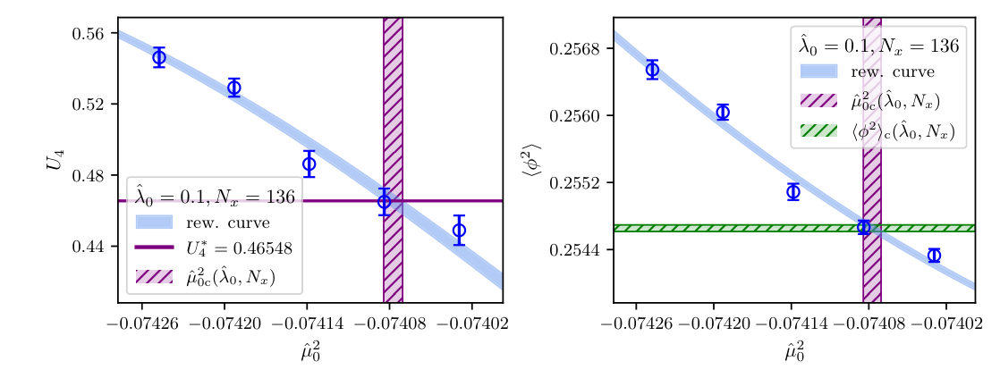
<figcaption class="paper-figure-caption"><b>Fig 1.</b> Figure 1: Left: The Binder cumulant U4 versus ˆµ2 0 at ˆλ0 = 0.1 for five independent simulations on Nx = 136 lattices. The light blue band shows the combined (reweighted) curve with its 1σ-uncertainty. The purple horizontal line reflects the universal value U∗ 4 = 0.46548 from Ref. [11]. The purple vertical band indicates ˆµ2 0c(ˆλ0, Nx), i.e., the value of ˆµ2 0 at which the reweighted curve equals U∗ 4 ; this defines the finite-volume transition. Right: The observable ⟨ϕ2⟩versus ˆµ2 0, based on the same runs and reweighting procedure, with the same purple vertical band to indicate ˆµ2 0c(ˆλ0, Nx). The green horizontal band shows the resulting ⟨ϕ2⟩c(ˆλ0, Nx), i.e., the reweighted curve...</figcaption>
</figure>
<figure class="paper-figure-card">
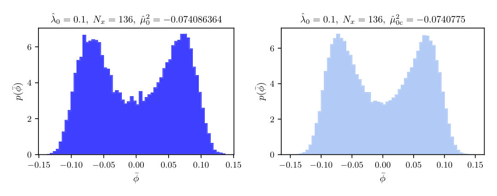
<figcaption class="paper-figure-caption"><b>Fig 2.</b> Figure 2: Probability distribution of the volume-averaged field ¯ϕ “at the transition point” for ˆλ0 = 0.1 and Nx = 136. Left: distribution for the simulated ensemble at ˆµ2 0 = −0.074086364, which is the one closest to ˆµ2 0c(0.1, 136). Right: combined distribution at the critical value ˆµ2 0c(0.1, 136) = −0.0740775, i.e., each ensemble shown in Fig. 1 is reweighted to ˆµ2 0c, every histogram bin is jackknifed separately, and the ensemble estimates in each bin are combined using inverse-variance weights.</figcaption>
</figure>
<figure class="paper-figure-card">
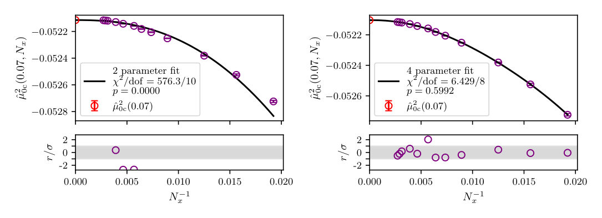
<figcaption class="paper-figure-caption"><b>Fig 3.</b> Figure 3: Two examples of the infinite-volume extrapolation of ˆµ2 0c(0.07, Nx), i.e., at our smallest bare coupling ˆλ0. In both cases all available Nx are included. Left: leading-order ansatz (npar = 2 in Eq. 14), resulting in p = 0.0000 at the displayed precision. Right: ansatz with two subleading terms (npar = 4 in Eq. 16), giving p = 0.5992. The sub-panels show the fit residuals (data-fit) in units of the statistical uncertainties of the data.</figcaption>
</figure>
<figure class="paper-figure-card">
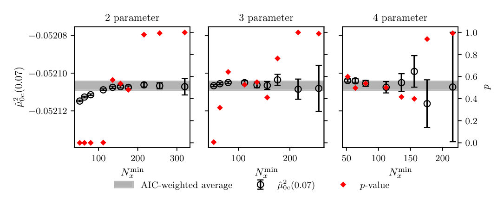
<figcaption class="paper-figure-caption"><b>Fig 4.</b> Figure 4: Extracted ˆµ2 0c(0.07) values in infinite volume (black circles, left axis) and the p-value of the respective fit (red diamonds, right axis) as a function of Nmin x . The three panels refer to npar = 2 (left), 3 (center), and 4 (right) in Eq. 16. The horizontal band indicates the final AIC-weighted combination over all fits with p &gt; 0.05.</figcaption>
</figure>
<figure class="paper-figure-card">
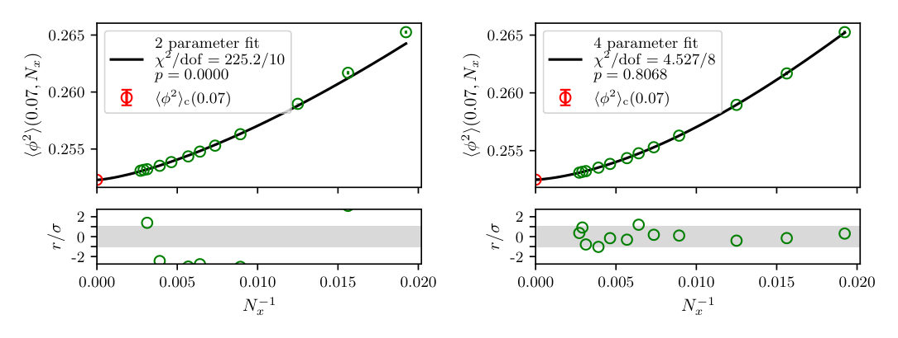
<figcaption class="paper-figure-caption"><b>Fig 5.</b> Figure 5: Two examples of the infinite-volume extrapolation of ⟨ϕ2⟩c(0.07, Nx) at our smallest bare coupling ˆλ0. In both cases all available Nx are included. Left: Leading-order ansatz (npar = 2 in Eq. 18); the p-value is zero at the displayed precision. Right: Ansatz with two subleading correction terms (npar = 4 in Eq. 18), giving p = 0.8068. The lower panels show the pulls (data-fit) in units of the statistical uncertainties.</figcaption>
</figure>
</div>

<p><strong>Summary.</strong> This work calculates critical parameters for the 3D $\phi^4$ theory by performing extensive lattice simulations. Using the fixed-point method and Finite-Size Scaling, the authors determine the critical coupling $f_c$ and the deviation $\Delta\langle\phi^2
angle_c/\lambda$ in the continuum, infinite-volume limit. The results provide precise numerical benchmarks for critical behavior in this fundamental quantum field theory model.</p>
<p><strong>Why it may be interesting.</strong> While the focus is on lattice field theory, the rigorous application of critical exponents and scaling laws in the $\phi^4$ model provides a strong theoretical framework for understanding phase transitions in many-body quantum systems.</p>
<details>
<summary>Detailed structure</summary>
<p><strong>Main problem.</strong> The paper aims to determine the critical coupling ($f_c$) and the difference in the expectation value of $\phi^2$ ($\Delta\langle\phi^2
angle_c/\lambda$) for the three-dimensional $\phi^4$ theory.</p>
<p><strong>Main result.</strong> The calculated critical coupling is $f_c = 18.808(78)_{	ext{tot}}$, and the difference in expectation value is $\Delta\langle\phi^2
angle_c/\lambda = -0.00303(17)_{	ext{tot}}$.</p>
<p><strong>Method.</strong> The study employs lattice field theory techniques, utilizing the fixed-point method and Finite-Size Scaling (FSS) to extrapolate results from finite lattice volumes to the infinite-volume continuum limit.</p>
<p><strong>Model / system.</strong> The system is the $\phi^4$ theory in three Euclidean dimensions, described by the action $S[\phi] = \int d^d x \left( rac{1}{2}(\partial\phi)^2 + \mu_0^2 \phi^2 + \lambda_0 \phi^4 
ight)$. The analysis focuses on the phase transition between the symmetric and broken phases.</p>
<p><strong>Key observables.</strong> Critical coupling ($f_c$), $\Delta\langle\phi^2
angle_c/\lambda$, Binder cumulant ($U_4$), and the pseudo-critical mass ($\hat{\mu}_{0c}$).</p>
<p><strong>Important parameters / regimes.</strong> The dimensionality $d=3$, the universal value for the Binder cumulant ($U^*_4 = 0.46548(5)$), and the bare coupling constants ($\hat{\lambda}_0$).</p>
<p><strong>Assumptions / limitations.</strong> The analysis assumes the system belongs to the 3D Ising universality class and relies on extrapolating scaling functions using various ansatzes (e.g., four-parameter fits).</p>
<p><strong>Figures summary.</strong> The notes describe figures illustrating the infinite-volume extrapolation of the pseudo-critical mass ($\hat{\mu}_{2c}^0$) and $\langle\phi^2
angle_c$ using different functional forms (ansatze) and the stability of the results.</p>
<p><strong>Paper structure.</strong> The paper systematically develops the methodology for lattice regularization, determining the critical point using the Binder cumulant, and then performing continuum and infinite-volume extrapolations for key observables like $f_c$ and $\Delta\langle\phi^2
angle_c/\lambda$.</p>
</details>
<details>
<summary>Abstract</summary>
<p>We consider the $φ^4$ theory with $φ(x)\in\mathbb{R}$ in three Euclidean dimensions. For a variety of self-couplings $\hatλ$, the critical (bare) parameter $\hatμ_{0\mathrm{c}}^2(\hatλ)$ is determined where the lattice-regulated system changes from the symmetric phase to the broken phase. Next, we send the box volume to infinity and switch to a universal scheme; this yields $\hatμ_\mathrm{c}^2(\hatλ)$ for each simulated $\hatλ$. Finally, a continuum extrapolation gives $f_\mathrm{c}=\lim_{\hatλ\to0} \hatλ^2/\hatμ_\mathrm{c}^2(\hatλ)$, and we find $f_\mathrm{c} = 18.808(64)_{\mathrm{stat}}(45)_{\mathrm{sys}} = 18.808(78)_{\mathrm{tot}}$. In addition, $Δ\langleφ^2\rangle_\mathrm{c}/λ= -0.00303(12)_{\mathrm{stat}}(12)_{\mathrm{sys}} = -0.00303(17)_{\mathrm{tot}}$ is determined in the combined continuum and infinite-volume limit.</p>
</details>
<p><sub><a href="#top">↑ back to top</a></sub></p>

<p><a id="paper-2610.03169"></a></p>
<h3 id="cup-and-cap-topological-neural-network"><a href="http://arxiv.org/abs/2610.03169v1">Cup and Cap Topological Neural Network</a></h3>
<p><strong>Authors:</strong> Marta Niedostatek, Ferran Hernandez Caralt, Runyue Wang, Federica Baccini, Lorenzo Giambagli, Pietro Lió, Ginestra Bianconi<br>
<strong>Type:</strong> theory · <strong>Category:</strong> disordered systems and neural networks · <strong>PDF:</strong> <a href="https://arxiv.org/pdf/2610.03169v1">https://arxiv.org/pdf/2610.03169v1</a><br>
<strong>Analysis basis:</strong> full PDF text, analyzed in chunks
<strong>Topic relevance:</strong> <code>analog quantum simulation</code> <strong>1/5</strong></p>
<div class="figure-strip-hint">↔ Scroll figures horizontally</div>
<div class="paper-figures-scroll">
<figure class="paper-figure-card">
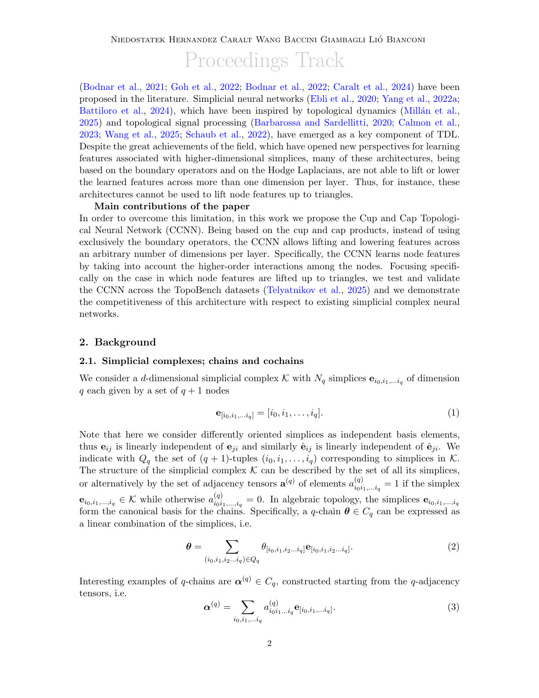
<figcaption class="paper-figure-caption"><b>Fig 1.</b> Low-resolution page preview, page 2</figcaption>
</figure>
<figure class="paper-figure-card">
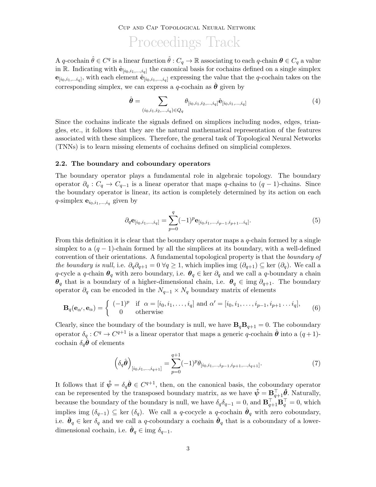
<figcaption class="paper-figure-caption"><b>Fig 2.</b> Low-resolution page preview, page 3</figcaption>
</figure>
<figure class="paper-figure-card">
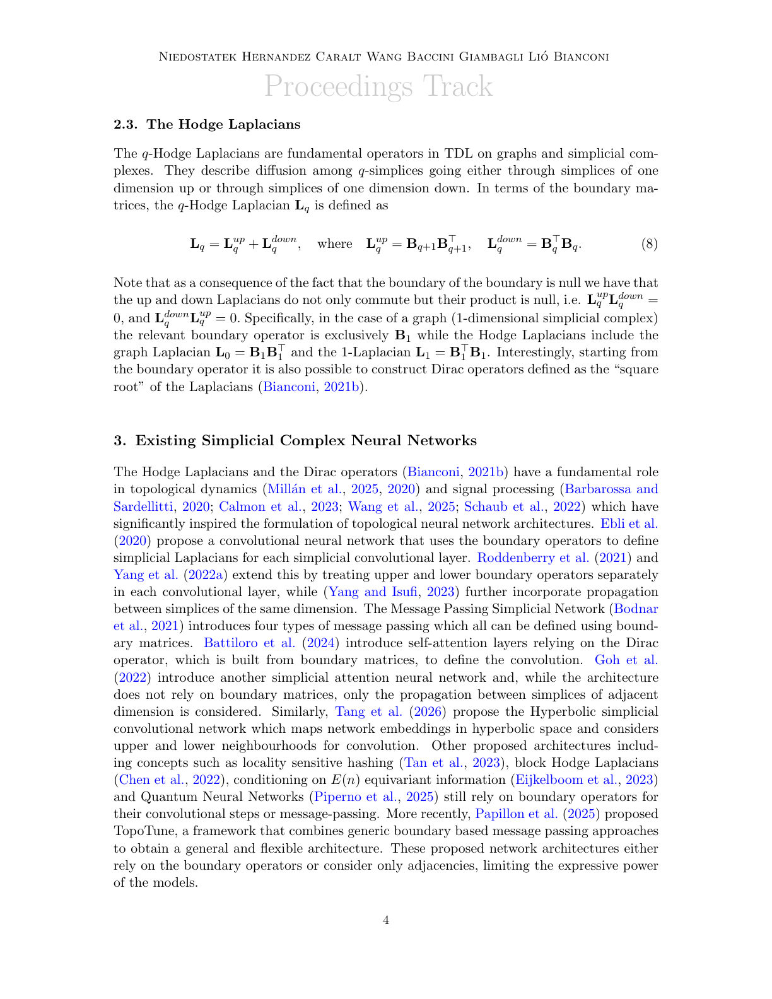
<figcaption class="paper-figure-caption"><b>Fig 3.</b> Low-resolution page preview, page 4</figcaption>
</figure>
<figure class="paper-figure-card">
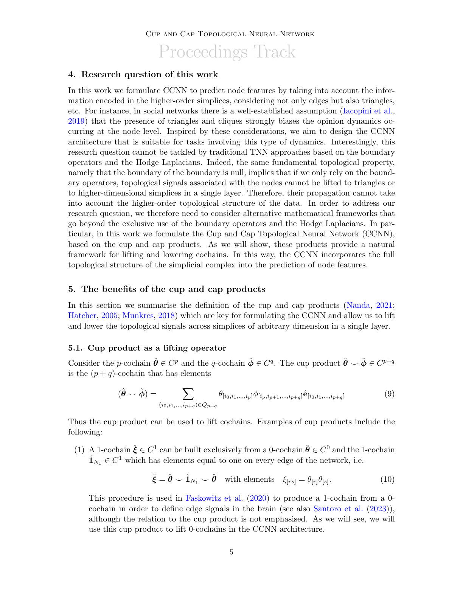
<figcaption class="paper-figure-caption"><b>Fig 4.</b> Low-resolution page preview, page 5</figcaption>
</figure>
<figure class="paper-figure-card">
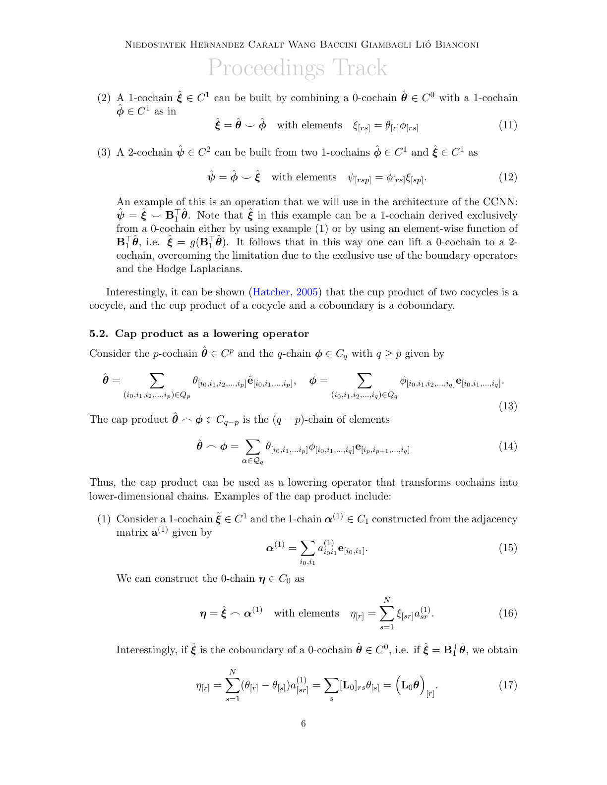
<figcaption class="paper-figure-caption"><b>Fig 5.</b> Low-resolution page preview, page 6</figcaption>
</figure>
</div>

<p><strong>Summary.</strong> This paper introduces the Cup and Cap Topological Neural Network (CCNN), an advanced TDL architecture designed to overcome the dimensional limitations of prior methods. By employing cup and cap products, CCNN can effectively incorporate high-order topological information (like triangles) to learn node features. It demonstrates superior or competitive performance against existing state-of-the-art models on standard benchmark datasets.</p>
<p><strong>Why it may be interesting.</strong> While the focus is on machine learning, the underlying mathematical machinery (simplicial complexes, cohomology, cup/cap products) is deeply rooted in algebraic topology, which has connections to quantum field theory and topological quantum computation.</p>
<details>
<summary>Detailed structure</summary>
<p><strong>Main problem.</strong> Existing Topological Deep Learning (TDL) methods are limited in their ability to propagate features across more than one dimension per layer using standard boundary operators.</p>
<p><strong>Main result.</strong> The proposed Cup and Cap Topological Neural Network (CCNN) successfully learns node-based variables by incorporating many-body interactions (like triangles), achieving state-of-the-art or highly competitive performance on TopoBench datasets.</p>
<p><strong>Method.</strong> The CCNN utilizes the mathematical framework of cup and cap products, which act as lifting and lowering operators, respectively, allowing feature propagation across an arbitrary number of dimensions per layer.</p>
<p><strong>Model / system.</strong> The model is a Topological Neural Network (TNN) designed to process information encoded in simplicial complexes (nodes, edges, triangles). It processes 0-cochains ($\hat{	heta}_0$) through multiple layers using recursive equations involving the cup and cap products.</p>
<p><strong>Key observables.</strong> Performance metrics (e.g., accuracy) on node-level tasks tested across various TopoBench datasets (Cora, Citeseer, Pubmed, etc.).</p>
<p><strong>Important parameters / regimes.</strong> The structure of the simplicial complex (up to triangles, $M=2$), the choice of auxiliary cochain formulation ($\eta$ or $\omega$), and hyperparameters like learning rates and hidden dimensions.</p>
<p><strong>Assumptions / limitations.</strong> The core assumption is that cup and cap products provide the necessary mathematical machinery to overcome the dimensional limitations inherent in boundary/Hodge Laplacian approaches.</p>
<p><strong>Figures summary.</strong> The notes reference Table 1, Table 2, Table 3, and Table 4, which summarize performance comparisons, architectural components (A, B, C terms), and ablation study results across different datasets.</p>
<p><strong>Paper structure.</strong> The paper first identifies the limitation of prior TDL methods. It then introduces the CCNN using cup and cap products. The methodology details the recursive construction of the network layers. Finally, the performance is validated through extensive benchmarking on the TopoBench library and ablation studies on specific datasets.</p>
</details>
<details>
<summary>Abstract</summary>
<p>Topological Deep Learning (TDL) is designed to learn features associated with higher-dimensional simplices including not only nodes but also edges, triangles and so on. However, most TDL approaches, being based on boundary operators and Hodge Laplacians, have the limitation that features and signals cannot be lifted or lowered across more than one dimension per layer. To overcome this limitation, in this work, we propose the adoption of the cup and cap products. Specifically, we formulate the Cup and Cap Topological Neural Network (CCNN), a topological deep learning architecture designed to learn node-based variables (or 0-cochains) by taking into account their many-body interactions (e.g. triangles) present in the data. We validate CCNN by assessing its performance on the TopoBench datasets, revealing its competitiveness with respect to other simplicial complex neural networks.</p>
</details>
<p><sub><a href="#top">↑ back to top</a></sub></p>

<p><a id="paper-2610.03108"></a></p>
<h3 id="determining-the-number-of-symmetry-sectors-in-composite-quantum-spectra"><a href="http://arxiv.org/abs/2610.03108v1">Determining the Number of Symmetry Sectors in Composite Quantum Spectra</a></h3>
<p><strong>Authors:</strong> Nisarg Vyas, S. Harshini Tekur, M. S. Santhanam<br>
<strong>Type:</strong> theory · <strong>Category:</strong> disordered systems and neural networks · <strong>PDF:</strong> <a href="https://arxiv.org/pdf/2610.03108v1">https://arxiv.org/pdf/2610.03108v1</a><br>
<strong>Analysis basis:</strong> full PDF text, analyzed in chunks
<strong>Topic relevance:</strong> <code>analog quantum simulation</code> <strong>1/5</strong></p>
<div class="figure-strip-hint">↔ Scroll figures horizontally</div>
<div class="paper-figures-scroll">
<figure class="paper-figure-card">
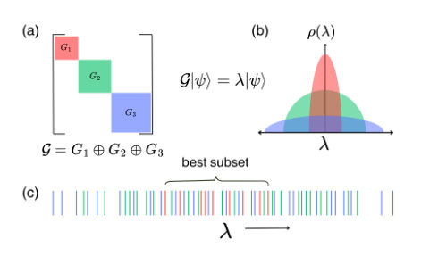
<figcaption class="paper-figure-caption"><b>Fig 1.</b> FIG. 1. (a) Schematic for a general block diagonal matrix G3 = G1(N1)⊕G2(N2)⊕G3(N3) with GOE matrices as sym- metry sectors. (b) Corresponding symmetry-resolved density of states ρ(λ) – Wigner semicircles of different radii. (c) Com- posite spectra with colors denoting symmetry sectors. The overlap motivates a technique to deduce the number of blocks.</figcaption>
</figure>
<figure class="paper-figure-card">
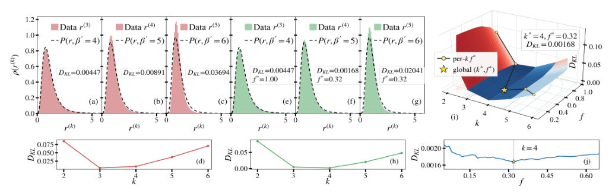
<figcaption class="paper-figure-caption"><b>Fig 2.</b> FIG. 2. HOSRs for k = 2 to 6 calculated on composite spectrum of four GUE matrices of sizes N ∈{5000, 10000, 15000, 20000}. In (a-c) we plot the k-SRDs with k = 3, 4, 5 calculated on the entire spectrum. The dashed line shows Eq. 2 with β′ = k + 1 = m + 1. (d) DKL minima incorrectly corresponds to k = 3. (e-g) k-SRDs with k = 3, 4, 5 with BST applied. (h) Correct deduction of m = k∗= 4. (i) DKL(k, f) surface as a function of the two parameters of BST, k and f. Here the circles show local minima in f for each k, and the star locates the global minima in the k −f space. (j) A slice of DKL(k, f) at k = 4.</figcaption>
</figure>
<figure class="paper-figure-card">
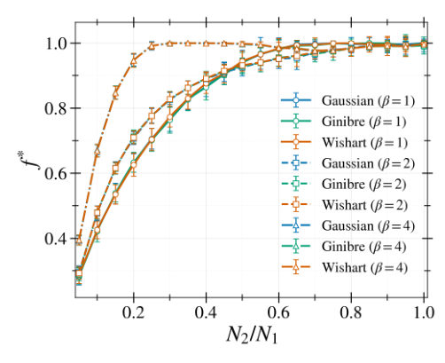
<figcaption class="paper-figure-caption"><b>Fig 3.</b> FIG. 3. The best fraction f ∗for composite spectra from two random matrices of orders N1 (fixed at 20000) and N2 (vary- ing). All the β = 1 ensembles fall onto one curve (circles). Similarly, all β = 2 and β = 4 ensembles follow the curves denoted by squares and triangles respectively.</figcaption>
</figure>
<figure class="paper-figure-card">
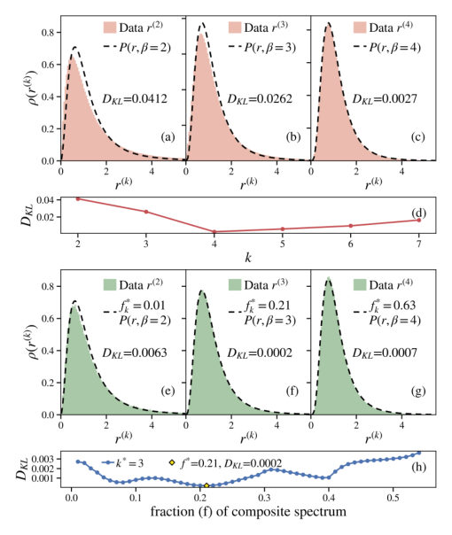
<figcaption class="paper-figure-caption"><b>Fig 4.</b> FIG. 4. HOSRs calculated on composite Hamiltonian spec- trum from three TFIMs with 14, 15 and 16 quantum spins. (a-c) HOSRs for k = 2, 3, 4 obtained from the composite spec- trum. (d) Incorrect deduction that m = 4. (e-g) HOSRs with BST applied. (h) shows the minima in f when k = 3.</figcaption>
</figure>
<figure class="paper-figure-card">
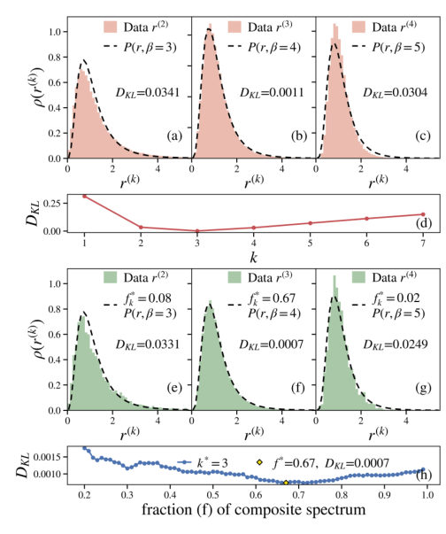
<figcaption class="paper-figure-caption"><b>Fig 5.</b> FIG. 5. HOSRs calculated on the composite spectrum from three hard-core boson models with 16, 17 and 18 bosons. (a- d) The KL divergence between P(r, β′ = k) and P (k)(r, β, m) reveals m = 3. (e-h) Application of BST confirms m = 3.</figcaption>
</figure>
</div>

<p><strong>Summary.</strong> This paper introduces the Best Subset Technique (BST) to solve the difficult problem of counting symmetry sectors in composite quantum spectra. By analyzing Higher-Order Spacing Ratios on an optimal subset of eigenvalues, the BST can accurately determine the number of contributing symmetry blocks, even when those blocks have unequal dimensions. This method is robustly tested across various random matrix ensembles and physical models.</p>
<p><strong>Why it may be interesting.</strong> This work provides a powerful, general diagnostic tool for analyzing complex quantum spectra, which is crucial for understanding spectral rigidity and symmetry breaking in disordered or interacting quantum systems.</p>
<details>
<summary>Detailed structure</summary>
<p><strong>Main problem.</strong> The primary goal is to determine the number of symmetry sectors ($m$) within a composite quantum spectrum when the individual symmetry sectors have unequal dimensions and the underlying symmetries are unknown or only partially known.</p>
<p><strong>Main result.</strong> A Best Subset Technique (BST) successfully determines $m$ by analyzing spectral fluctuations, outperforming traditional methods that fail when sector dimensions are unequal.</p>
<p><strong>Method.</strong> The BST uses Higher-Order Spacing Ratios (HOSRs) and minimizes the Kullback–Leibler (KL) divergence between the empirical HOSR distribution and expected random matrix ensemble distributions.</p>
<p><strong>Model / system.</strong> The analysis applies to composite spectra derived from Hermitian and non-Hermitian systems, tested using random matrix ensembles like Gaussian, Wishart, and Ginibre matrices, as well as many-body models like the Transverse Field Ising Model (TFIM).</p>
<p><strong>Key observables.</strong> Higher-Order Spacing Ratios (HOSRs) and the resulting best-fit parameters ($k^*, f^*$) used in the BST.</p>
<p><strong>Important parameters / regimes.</strong> The number of symmetry sectors ($m$), the fraction of the spectrum analyzed ($f$), and the order of the ratio ($k$).</p>
<p><strong>Assumptions / limitations.</strong> The core assumption is that the HOSRs calculated on a specific, optimal subset (the 'best subset') of the spectrum can reliably proxy the underlying spectral statistics, even when the full spectrum is complex.</p>
<p><strong>Figures summary.</strong> Figures illustrate the failure of standard HOSR analysis on composite spectra (e.g., four GUE matrices) and demonstrate the success of the BST in correctly deducing the number of blocks ($m=4$ or $m=3$) by analyzing specific spectral fractions.</p>
<p><strong>Paper structure.</strong> The paper introduces the problem of composite spectra, details the HOSR formalism, proposes the BST using KL divergence minimization, and validates the technique by applying it successfully to multiple random matrix ensembles (Gaussian, Wishart, Ginibre) and physical models (TFIM).</p>
</details>
<details>
<summary>Abstract</summary>
<p>The spectral fluctuations in complex quantum systems are modeled in terms of spectra from random matrices. Quantitative agreement with random matrices holds only when the quantum spectrum is a pure sequence, and not a composite spectrum that mixes levels from different symmetry sectors. It was shown earlier that discrete symmetries in composite spectra can be detected using higher-order spacing ratio statistics provided the symmetry sectors are of equal dimensions. The general case is when the symmetry sectors have unequal dimensions, and the symmetries of the Hamiltonian system are unknown or only partially known. In this work, we address how the number of symmetry sectors can be determined from a composite spectrum arising in Hermitian and non-Hermitian settings. A Best Subset Technique is proposed for determining the number of the symmetry sectors by comparing the spectral fluctuations to that of an appropriate random matrix ensemble without requiring de-symmetrization. It is demonstrated using spectra from Gaussian, Wishart and Ginibre ensembles, and also for spectra drawn from many-body quantum systems.</p>
</details>
<p><sub><a href="#top">↑ back to top</a></sub></p>

<p><a id="paper-2610.02635"></a></p>
<h3 id="fractionalization-induced-time-reversal-symmetry-breaking-at-continuous-superconducting-transitions-in-low-symmetry-kondo-lattices"><a href="http://arxiv.org/abs/2610.02635v1">Fractionalization-Induced Time-Reversal Symmetry Breaking at Continuous Superconducting Transitions in Low-Symmetry Kondo Lattices</a></h3>
<p><strong>Authors:</strong> Wonjune Choi, Shi-Zeng Lin<br>
<strong>Type:</strong> theory · <strong>Category:</strong> strongly correlated electrons · <strong>PDF:</strong> <a href="https://arxiv.org/pdf/2610.02635v1">https://arxiv.org/pdf/2610.02635v1</a><br>
<strong>Analysis basis:</strong> full PDF text, analyzed in chunks
<strong>Topic relevance:</strong> <code>Keldysh / 2PI / non-Gaussian methods</code> <strong>1/5</strong></p>
<div class="figure-strip-hint">↔ Scroll figures horizontally</div>
<div class="paper-figures-scroll">
<figure class="paper-figure-card">
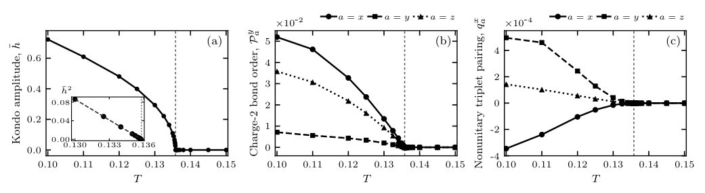
<figcaption class="paper-figure-caption"><b>Fig 1.</b> FIG. 1. The panels show mean-field results for the Kondo–Kitaev model on 20 × 20 unit cells with periodic boundary conditions, Kx = Ky = 1, Kz = 0.95, tx = ty = 0.2, tz = 0.19, JK = 1.9, and conduction electron filling nc = 0.9 per site. (a) The mean-field scaling ¯h2 ∝Tc −T below Tc (inset) supports continuous onset of the Kondo amplitude ¯h. (b) Charge-two bond order Py a indicates Kondo-induced superconductivity. (c) Nonunitary triplet pairing qx a extracted from the anomalous c fermion correlators diagnoses broken TRS. Within numerical resolution, all three order parameters become nonzero continuously at the same critical temperature Tc ≃0.1358.</figcaption>
</figure>
</div>

<p><strong>Summary.</strong> This theoretical work shows that in Kondo lattices coupled to $\mathbb{Z}_2$ spin liquids, symmetry fractionalization can force superconductivity and time-reversal symmetry breaking to occur together at one continuous transition. Using the Kondo-Kitaev model, the authors demonstrate this by analyzing the projective symmetry algebra and calculating multiple order parameters self-consistently.</p>
<p><strong>Why it may be interesting.</strong> The mechanism of symmetry fractionalization provides a powerful, non-standard theoretical tool for understanding emergent symmetries in strongly correlated materials, which is relevant to understanding exotic superconducting states.</p>
<details>
<summary>Detailed structure</summary>
<p><strong>Main problem.</strong> The paper addresses how superconductivity and the breaking of an additional symmetry, such as Time-Reversal Symmetry (TRS), can emerge simultaneously at a single continuous quantum phase transition.</p>
<p><strong>Main result.</strong> Symmetry fractionalization provides a mechanism that forces the simultaneous onset of superconductivity and TRS breaking, even when conventional Landau theory predicts otherwise for low-symmetry systems.</p>
<p><strong>Method.</strong> The analysis employs theoretical derivations using projective symmetry algebra and mean-field theory applied to the Kondo lattice model.</p>
<p><strong>Model / system.</strong> The system is a Kondo lattice coupled to a $\mathbb{Z}_2$ spin liquid, modeled concretely using an anisotropic Kondo-Kitaev model on a honeycomb lattice.</p>
<p><strong>Key observables.</strong> Superconducting order parameter ($P^{\mu}_{jk}$), Kondo amplitude ($\bar{h}$), and nonunitary triplet pairing vector ($\mathbf{q}_a$).</p>
<p><strong>Important parameters / regimes.</strong> The condition $\Theta^2 = -I$ for the projective time-reversal action, and the critical temperature $T_c$.</p>
<p><strong>Assumptions / limitations.</strong> The analysis relies on the mean-field approximation and assumes the Kondo transition is approached from a deconfined $\mathbb{Z}_2$ spin liquid state.</p>
<p><strong>Figures summary.</strong> Figure 1 shows mean-field results demonstrating that the Kondo amplitude, charge-two bond order, and nonunitary triplet pairing all become non-zero continuously at the same critical temperature $T_c$.</p>
<p><strong>Paper structure.</strong> The paper develops the theory by first establishing the symmetry constraints via projective algebra, then applying mean-field theory to the Kondo-Kitaev model, and finally calculating the self-consistent order parameters to confirm the simultaneous transition.</p>
</details>
<details>
<summary>Abstract</summary>
<p>In conventional Landau theory, simultaneous continuous onset of superconductivity and the breaking of additional symmetries generally requires a multidimensional order parameter or fine tuning. We show that symmetry fractionalization provides a different route. In a Kondo lattice with a $\mathbb Z_2$ spin liquid, the Kondo fields inherit the projective symmetry action of the spinons. When the projective time-reversal action on these fields squares to $-1$, the projective symmetry algebra forbids a condensate that preserves time-reversal symmetry and enforces twofold degeneracy of the critical modes. Because Kondo condensation in a $\mathbb Z_2$ spin liquid also breaks electromagnetic $U(1)$ symmetry, superconductivity and time-reversal symmetry breaking can emerge at a single continuous transition, even if crystal symmetry admits only one-dimensional irreducible representations. We demonstrate this mechanism in an anisotropic Kondo-Kitaev model, where superconductivity and the breaking of time-reversal and mirror symmetries emerge simultaneously.</p>
</details>
<p><sub><a href="#top">↑ back to top</a></sub></p>

<p><a id="paper-2610.03586"></a></p>
<h3 id="lifting-multiplicity-in-randomized-benchmarking"><a href="http://arxiv.org/abs/2610.03586v1">Lifting Multiplicity in Randomized Benchmarking</a></h3>
<p><strong>Authors:</strong> Yale Fan, J. P. Marceaux<br>
<strong>Type:</strong> theory · <strong>Category:</strong> quantum information and computing · <strong>PDF:</strong> <a href="https://arxiv.org/pdf/2610.03586v1">https://arxiv.org/pdf/2610.03586v1</a><br>
<strong>Analysis basis:</strong> full PDF text, analyzed in chunks
<strong>Topic relevance:</strong> <code>quantum measurements</code> <strong>1/5</strong></p>
<div class="figure-strip-hint">↔ Scroll figures horizontally</div>
<div class="paper-figures-scroll">
<figure class="paper-figure-card">
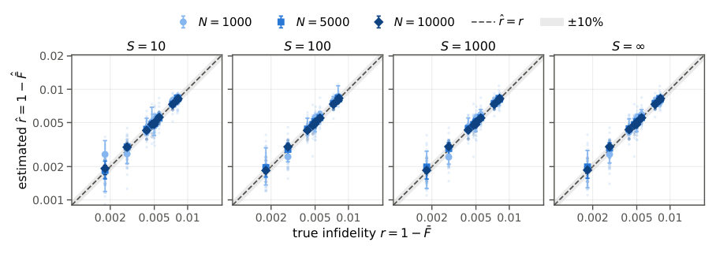
<figcaption class="paper-figure-caption"><b>Fig 1.</b> Figure 1: Performance of lifted randomized benchmarking with gate-independent noise over varying noise channel infidelities, circuits per depth, and shots per circuit. These fits were constructed over the geometric interval 2k with maximum depth 64, N circuits per depth, and S shots per circuit. Each point represents the median of 20 trials of the lifting benchmarking protocol for a given noise channel, and the error bars represent the central 68% intervals. Each element of the lifting group and benchmarking group has the same noise channel. We find that for N = 1000, some of the fits fail and produce estimates with infidelity less than 0, and for the others with greater circuits per depth,...</figcaption>
</figure>
<figure class="paper-figure-card">
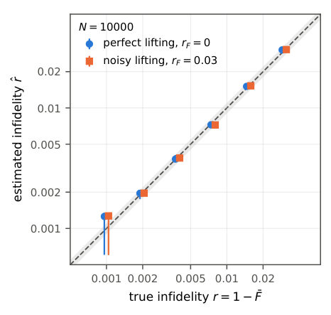
<figcaption class="paper-figure-caption"><b>Fig 2.</b> Figure 2: Estimated fidelity with noisy lifting vs. perfect lifting. We apply our procedure for the ZZ gate with 10,000 circuits per depth and 100 shots per circuit. Each point represents the median of 20 trials of the lifting benchmarking protocol for a given noise channel, and the error bars represent the central 68% intervals. In the case of perfect lifting, perfect lifting operators are applied (which means that only the last lifting operator that was not compiled into the benchmarking sequence is perfect). In the case of noisy lifting, both the first compiled and the last lifting operators contain a separate noise channel of infidelity equal to 0.03, which is larger than the...</figcaption>
</figure>
<figure class="paper-figure-card">
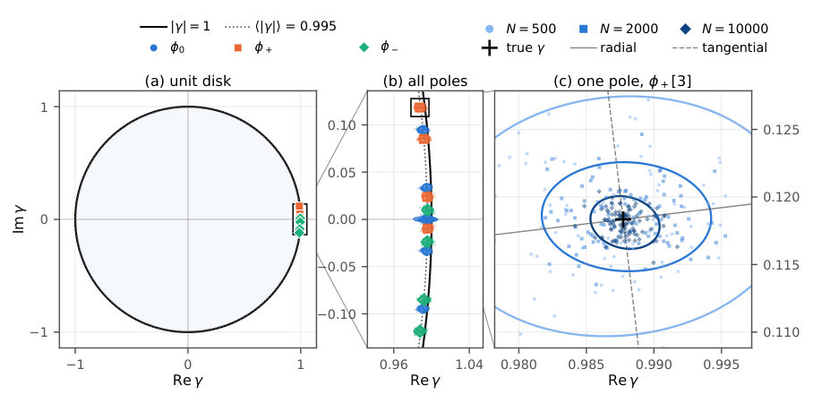
<figcaption class="paper-figure-caption"><b>Fig 3.</b> Figure 3: Estimated poles of the ZZ gate error channel in the complex plane. A single noise channel was fixed at the beginning of the experiment, and each point represents an experimental implementation with that fixed noise channel. The ZZ gate benchmarking group projects a general CPTP noise process onto the irrep decomposition, and our procedure robustly measures the eigenvalues of the isotypic components. These fits were constructed over the geometric interval 2k with maximum depth 64, N circuits per depth, and 1000 shots per circuit.</figcaption>
</figure>
<figure class="paper-figure-card">
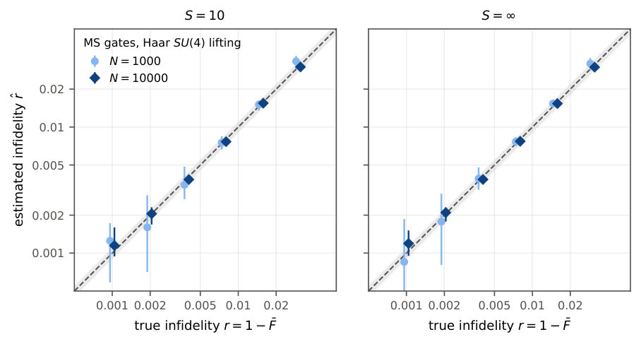
<figcaption class="paper-figure-caption"><b>Fig 4.</b> Figure 4: MS gate benchmarking results for gate-independent noise. Each point represents the median of 20 trials of the lifting benchmarking protocol over a given noise channel, and the error bars represent the central 68% intervals. The error channels consist of equal parts Pauli stochastic and coherent noise.</figcaption>
</figure>
<figure class="paper-figure-card">
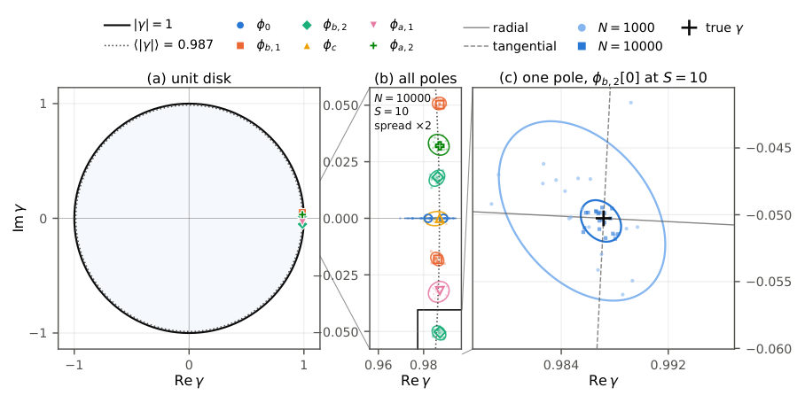
<figcaption class="paper-figure-caption"><b>Fig 5.</b> Figure 5: Estimated poles of the MS gate error channel in the complex plane. A single noise channel was fixed at the beginning of the experiment, and each point represents an experimental implementation with that fixed noise channel. The MS gate benchmarking group projects a general CPTP noise process onto the irrep decomposition, and our procedure robustly measures the eigenvalues of the isotypic components. These fits were constructed over the geometric interval 2k with maximum depth 64, N circuits per depth, and 1000 shots per circuit.</figcaption>
</figure>
</div>

<p><strong>Summary.</strong> This paper introduces Lifted Randomized Benchmarking, a theoretical advancement for assessing quantum gate fidelity. It solves the problem where native gate groups have multiplicity, which complicates data analysis by requiring multi-exponential fits. By enlarging the benchmarking group to a multiplicity-free structure, the method allows for robust fidelity estimation using only single exponential fits.</p>
<p><strong>Why it may be interesting.</strong> It provides a powerful, general theoretical tool for characterizing quantum hardware performance that circumvents known mathematical bottlenecks (multiplicity) in standard benchmarking protocols.</p>
<details>
<summary>Detailed structure</summary>
<p><strong>Main problem.</strong> Standard Randomized Benchmarking fails when the group of native quantum gates has multiplicity, leading to complex data requiring multi-exponential fits.</p>
<p><strong>Main result.</strong> The authors introduce 'Lifted Randomized Benchmarking,' a method that estimates gate fidelity by fitting only single exponential decays, thereby bypassing the need to handle multiplicity.</p>
<p><strong>Method.</strong> The technique generalizes character and synthetic RB by enlarging the benchmarking group to a larger, multiplicity-free group, allowing the estimation of decay rates via single exponential fits.</p>
<p><strong>Model / system.</strong> The theory applies to assessing the operational fidelity of quantum processors, specifically illustrated using two-qubit gates relevant to trapped-ion systems.</p>
<p><strong>Key observables.</strong> Average weighted survival probabilities (e.g., p_Lambda^m) and the eigenvalues of the noise-related matrix M_lambda(E).</p>
<p><strong>Important parameters / regimes.</strong> The choice of the auxiliary lifting group F, which must contain the isotypic component of the target representation.</p>
<p><strong>Assumptions / limitations.</strong> The method assumes the existence of a suitable lifting group F and is robust to errors in state preparation and measurement (SPAM).</p>
<p><strong>Paper structure.</strong> The paper develops the theory by first identifying the failure mode (multiplicity in RB), then proposing the lifting procedure by enlarging the group, and finally demonstrating its application to estimate fidelity for specific physical gate sets.</p>
</details>
<details>
<summary>Abstract</summary>
<p>Randomized benchmarking comprises a suite of standard techniques for assessing the operational fidelity of quantum processors. These techniques can be reliably applied to groups with process matrix representations that are free of multiplicity. However, many groups that are naturally formed from native gates do have multiplicity, and it is difficult to draw robust conclusions from the resulting data. In this work, we present a new and intrinsic solution to the problem of multiplicity that completely eliminates the need to fit multi-exponential decays while still remaining robust to errors in state preparation and measurement. Our procedure, which we call lifted randomized benchmarking, generalizes key elements of both character and synthetic randomized benchmarking to benchmark a target group of quantum gates with respect to an enlarged group. We illustrate in numerical examples that our method can efficiently and reliably estimate the fidelity of two-qubit gates relevant to experimental trapped-ion systems. These techniques may find applications beyond randomized benchmarking to quantum tomography and learning, as well as the characterization of error-correcting codes.</p>
</details>
<p><sub><a href="#top">↑ back to top</a></sub></p>

<p><a id="paper-2610.03279"></a></p>
<h3 id="pricing-of-graph-based-quantum-portfolios-from-first-principles"><a href="http://arxiv.org/abs/2610.03279v1">Pricing of graph-based quantum portfolios from first principles</a></h3>
<p><strong>Authors:</strong> Daniel J. Spencer, Bin Cheng, Dinh-Long Vu, Kishor Bharti, Alexey V. Gorshkov, Patrick Rebentrost<br>
<strong>Type:</strong> theory · <strong>Category:</strong> other · <strong>PDF:</strong> <a href="https://arxiv.org/pdf/2610.03279v1">https://arxiv.org/pdf/2610.03279v1</a><br>
<strong>Analysis basis:</strong> full PDF text, analyzed in chunks
<strong>Topic relevance:</strong> <code>quantum measurements</code> <strong>1/5</strong></p>
<div class="figure-strip-hint">↔ Scroll figures horizontally</div>
<div class="paper-figures-scroll">
<figure class="paper-figure-card">

<figcaption class="paper-figure-caption"><b>Fig 1.</b> Figure 1: Two simple circulant graphs for graphs with n = 7 vertices, Ci7(1) and Ci7(1, 2). In Ci7(1), each vertex i is connected to vertices i + 1 (mod 7), while in Ci7(1, 2), each vertex i is connected to both vertices i + 1 mod 7 and i + 2 (mod 7).</figcaption>
</figure>
<figure class="paper-figure-card">

<figcaption class="paper-figure-caption"><b>Fig 2.</b> Figure 2: Success probability as a function of θ ∈(−2π, 2π) for the parameterized projective measurement (i.e., quantum) strategy (green curve) and the classical strategy (black, dashed line), with crossover points indicated in dark red. The areas where the quantum strategy outperforms the classical strategy are shaded in green.</figcaption>
</figure>
<figure class="paper-figure-card">

<figcaption class="paper-figure-caption"><b>Fig 3.</b> Figure 5: (a) Sketch of the standard CHSH game. Two parties, Alice and Bob, share a quantum state. They receive classical bits x and y and are tasked with returning the classical bits a and b such that a predicate a ⊕b = x ∧y is satisfied. (b) Sketch of the interpretation of the CHSH game as a market microstructure. The trader Alice shares an entangled state with the exchange, which has subsumed the party we normally call Bob. The actions of Bob are therefore part of the market microstructure and are taken as those in the standard CHSH game. Also depicted is the exchange-mediated trade of outcome-contingent claims between Alice and Charlie, together with the associated cash transfers.</figcaption>
</figure>
</div>

<p><strong>Summary.</strong> This work develops a novel framework for quantum finance by treating assets as non-commuting quantum operators. It models a 'quantum market' using nonlocal games like the CHSH game, showing it has definable financial structures. The authors derive rigorous upper bounds for asset pricing using advanced graph-theoretic measures.</p>
<p><strong>Why it may be interesting.</strong> While the primary focus is finance, the mathematical tools—contextuality, nonlocality, and the use of graph invariants to bound physical quantities—are highly relevant to understanding correlations and constraints in quantum information theory.</p>
<details>
<summary>Detailed structure</summary>
<p><strong>Main problem.</strong> The paper addresses the challenge of valuing assets in a quantum financial setting where assets are non-commuting operators, extending classical finance into quantum mechanics.</p>
<p><strong>Main result.</strong> It demonstrates that a 'quantum market' based on nonlocal games, such as the CHSH game, can possess well-defined financial structures, providing first-principles pricing bounds for quantum assets.</p>
<p><strong>Method.</strong> The methodology combines quantum finance concepts with graph theory and contextuality, using graph-theoretic quantities like the independence number and Lovász theta number to derive upper bounds on fair prices.</p>
<p><strong>Model / system.</strong> The core model is a 'quantum market' instantiated using nonlocal games (e.g., CHSH game) involving entangled quantum states. The mathematical structure is formalized using graph theory concepts applied to asset compatibility.</p>
<p><strong>Key observables.</strong> Quantum vs. classical portfolio performance, total correlation $S$, conditional correlation $E(x, y)$, and graph-theoretic quantities ($\alpha(G)$, $\vartheta(G)$).</p>
<p><strong>Important parameters / regimes.</strong> The optimal quantum strategy yields a higher winning probability than the classical limit (e.g., $\approx 0.854$ vs $3/4$).</p>
<p><strong>Assumptions / limitations.</strong> The analysis is built upon extending classical financial notions to quantum contexts and is initially instantiated using the CHSH game structure.</p>
<p><strong>Paper structure.</strong> The paper first establishes the need to extend finance to quantum assets, then develops the framework using graph theory and nonlocal games (like CHSH), deriving pricing bounds using graph invariants, and finally discussing extensions to other quantum primitives like quantum money.</p>
</details>
<details>
<summary>Abstract</summary>
<p>A central topic in economics and finance is the valuation of strategic games and bets, of investments providing uncertain future cashflows, and of other asset-like structures and contracts. Often, such valuation involves a probabilistic model, random variables, and computing expectation values of complex payoffs. Extending beyond this classical framework, a scenario emerges where assets are non-commuting operators and the inherent uncertainty is described by quantum states. In this work, we combine such notions of quantum finance with a graph-theoretic framework and ideas from contextuality. We discuss exclusive quantum assets and introduce scenarios when holding such assets can provide advantages over holding classical assets. In particular, we consider a "quantum market" based on nonlocal games such as the CHSH game and demonstrate that this setting can function as a market with well-defined financial structures. We provide upper bounds on the fair prices of the quantum assets based on graph-theoretic quantities like the independence number and the Lovász theta number. Our insights into markets of non-commuting assets help to elucidate what a financial system in a world filled with quantum technology could look like.</p>
</details>
<p><sub><a href="#top">↑ back to top</a></sub></p>

<p><a id="paper-2610.02916"></a></p>
<h3 id="quasiparticle-quantum-simulation-of-materials-with-the-bethe-salpeter-equation"><a href="http://arxiv.org/abs/2610.02916v1">Quasiparticle quantum simulation of materials with the Bethe-Salpeter equation</a></h3>
<p><strong>Authors:</strong> Jielun Chen, Jiace Sun, Garnet Kin-Lic Chan<br>
<strong>Type:</strong> theory · <strong>Category:</strong> quantum information and computing · <strong>PDF:</strong> <a href="https://arxiv.org/pdf/2610.02916v1">https://arxiv.org/pdf/2610.02916v1</a><br>
<strong>Analysis basis:</strong> full PDF text, analyzed in chunks
<strong>Topic relevance:</strong> <code>analog quantum simulation</code> <strong>1/5</strong></p>
<div class="figure-strip-hint">↔ Scroll figures horizontally</div>
<div class="paper-figures-scroll">
<figure class="paper-figure-card">

<figcaption class="paper-figure-caption"><b>Fig 1.</b> Figure 1. Block encodings of the direct and exchange term. (a) The direct oo circuit, where F is the Fourier trans- form on the momentum registers, χW,o is the block isometry of Eq. (33), and ˜ζW is the diagonal operator of Eq. (36). The vv and direct ov circuits use the same structure. (b) The exchange ov circuit, where χV,o S is the state preparation of Eq. (46), controlled by k and the auxiliary index.</figcaption>
</figure>
<figure class="paper-figure-card">

<figcaption class="paper-figure-caption"><b>Fig 2.</b> Figure 2. Subnormalizations and walk costs for triexcitonic BSE eigenvalue estimation in diamond without using space-group adaptation, using a THC fitting criterion of approximately 0.1 mEh MP2 energy error per unit cell. (a) Fock, direct, exchange, and total subnormalizations, including the m = 3 excitation-order factors defined in Eqs. (30) and (31). Thin lines connect successive points, scaling fits are obtained from the last three data points, and open markers denote extrapolated data. (b) Toffoli-optimized walk components and their sum. (c) Total walk costs for both T-optimal and Q-optimal compilation; the legend gives the theoretical leading powers N 0.5 k and N 1.0 k .</figcaption>
</figure>
<figure class="paper-figure-card">

<figcaption class="paper-figure-caption"><b>Fig 3.</b> Figure 3. Quantum and classical resource estimates for diamond. The BSE calculations use m = 3, a THC fitting tolerance of 0.1 mEh MP2 error per unit cell, and no space-group adaptation. All quantum methods target 0.1 eV QPE error per eigenvalue estimate: an excitation energy for BSE and a total supercell energy for the full-Hamiltonian methods. Constant overheads for combining ground- and excited-state estimates are omitted. (a) Quantum Toffoli counts and classical BSE FLOPs. (b) Logical qubits and classical BSE storage, counted in floating-point values. Open markers denote extrapolated data.</figcaption>
</figure>
<figure class="paper-figure-card">

<figcaption class="paper-figure-caption"><b>Fig 4.</b> Figure 4. Toffoli-optimized multi-exciton BSE resources at Nk = 1000, with a target QPE error of 0.1 eV in the excita- tion energy and a THC fitting tolerance below 0.005 eV MP2 error per active electron. All cases use m = 3 unless oth- erwise labelled. (a) Toffoli counts without (blue) and with (orange) space-group adaptation. Diamond uses subnormal- izations from space-group-adapted fits; the other materials retain those from fits without space-group adaptation. (b) Logical-qubit counts, which agree between the two settings at the displayed precision. Input estimates and subnormal- ization extrapolations are detailed in Appendix G.</figcaption>
</figure>
<figure class="paper-figure-card">

<figcaption class="paper-figure-caption"><b>Fig 5.</b> Figure 5. Block-unitary synthesis. (a) The circuit that synthesizes the block-unitary, composed of alternating layers followed by a diagonal phase layer ∆. White squares indicate multiplexed rotations; ±1 denotes increment/decrement. (b) Growth of the synthesized blocks under the applications of each layer (final phase layer omitted). Blue boxes mark entries updated by each layer, and orange boxes mark entries that were previously zero and become non-zero.</figcaption>
</figure>
</div>

<p><strong>Summary.</strong> This paper details a method for quantum simulation of multi-excitonic states using the Bethe-Salpeter equation (BSE) within a quasiparticle framework. By encoding the BSE Hamiltonian into a qubit circuit, the authors demonstrate significant resource savings—up to an exponential reduction in qubits—compared to simulating the full electronic Hamiltonian. This confirms that classical heuristic approximations are crucial for designing feasible future quantum algorithms for materials science.</p>
<p><strong>Why it may be interesting.</strong> The work directly addresses the resource scaling for simulating complex many-body quantum systems (excitons) using quantum computation primitives, which is highly relevant to quantum algorithms for condensed matter physics.</p>
<details>
<summary>Detailed structure</summary>
<p><strong>Main problem.</strong> Developing resource-efficient quantum algorithms to simulate multi-excitonic states governed by the Bethe-Salpeter equation (BSE) in materials.</p>
<p><strong>Main result.</strong> The quasiparticle approach offers exponential reductions in quantum resources (Toffoli gates and qubits) compared to simulating the full electronic Hamiltonian.</p>
<p><strong>Method.</strong> The authors developed an explicit first-quantized, orbital-based block encoding of the multi-exciton BSE Hamiltonian for qubitization, employing integral factorization and crystal symmetries for optimization.</p>
<p><strong>Model / system.</strong> The simulation targets multi-excitonic states in materials, modeled using first-principles approaches and governed by the BSE, which is derived from the full electronic Hamiltonian.</p>
<p><strong>Key observables.</strong> Excitation energies, Toffoli gate count, and logical qubit count.</p>
<p><strong>Important parameters / regimes.</strong> System size N (up to $10^3$ atoms), number of quasiparticles, and k-point mesh size ($N_k$).</p>
<p><strong>Assumptions / limitations.</strong> The use of heuristic quasiparticle approximations (GW/BSE) and the assumption of exponential localization of orbitals for convergence proofs.</p>
<p><strong>Figures summary.</strong> Table V provides detailed resource estimates (Toffoli counts, logical qubits) for various materials across different k-point meshes, showing scaling behavior.</p>
<p><strong>Paper structure.</strong> The paper progresses from establishing the difficulty of full Hamiltonian simulation to detailing the BSE formulation, developing the qubit encoding, optimizing the resource scaling, and finally presenting resource estimates for specific materials.</p>
</details>
<details>
<summary>Abstract</summary>
<p>The first-principles quantum simulation of the full electronic Hamiltonian of a material model of realistic size appears daunting even in a future era of fully fault-tolerant quantum computers. In contrast, classical simulations of material excited states rely on heuristic quasiparticle frameworks, such as the GW approximation and Bethe-Salpeter equation, where only a few quasiparticles are explicitly considered. Here we give a detailed description of quasiparticle quantum simulation for multi-excitonic states within the BSE. We develop an explicit first-quantized, orbital-based block encoding of the multi-exciton BSE Hamiltonian for qubitization, and reduce its cost using integral factorization and crystal symmetries. For a materials model of size $N$, and a fixed number of quasiparticles, the resulting algorithms require $\widetilde{O}(N)$ Toffoli gates and $O(\log N)$ logical qubits, or, using space-time tradeoffs, $\widetilde{O}(\sqrt{N})$ Toffoli gates and $\widetilde{O}(\sqrt{N})$ logical qubits, achieving up to a sixth power reduction in Toffoli count, or up to exponential reduction in qubit count, versus standard full Hamiltonian simulation techniques that have been explored in materials simulation. Resource estimates for the classically challenging problem of triexcitonic eigenvalue estimation across a range of semiconductor models of a realistic physical size of $O(10^3)$ atoms, show that our Toffoli-optimized implementation reduces the Toffoli count by $10^6-10^7$ relative to full Hamiltonian simulation estimates, while a qubit-optimized implementation requires only a few hundred logical qubits. More broadly, these results show that classical heuristic frameworks will be essential in the design of future fault-tolerant quantum algorithms for materials.</p>
</details>
<p><sub><a href="#top">↑ back to top</a></sub></p>

<p><a id="paper-2610.02939"></a></p>
<h3 id="root-sparsity-scaling-for-hamiltonian-simulation-differential-equations-and-linear-system-solvers"><a href="http://arxiv.org/abs/2610.02939v1">Root-sparsity scaling for Hamiltonian simulation, differential equations and linear-system solvers</a></h3>
<p><strong>Authors:</strong> Dominic W. Berry, Abhishek Rawat, Sophia Simon, Guang Hao Low<br>
<strong>Type:</strong> theory · <strong>Category:</strong> quantum information and computing · <strong>PDF:</strong> <a href="https://arxiv.org/pdf/2610.02939v1">https://arxiv.org/pdf/2610.02939v1</a><br>
<strong>Analysis basis:</strong> full PDF text, analyzed in chunks
<strong>Topic relevance:</strong> <code>analog quantum simulation</code> <strong>1/5</strong></p>
<div class="figure-strip-hint">↔ Scroll figures horizontally</div>
<div class="paper-figures-scroll">
<figure class="paper-figure-card">

<figcaption class="paper-figure-caption"><b>Fig 1.</b> Low-resolution page preview, page 2</figcaption>
</figure>
<figure class="paper-figure-card">

<figcaption class="paper-figure-caption"><b>Fig 2.</b> Low-resolution page preview, page 3</figcaption>
</figure>
<figure class="paper-figure-card">

<figcaption class="paper-figure-caption"><b>Fig 3.</b> Low-resolution page preview, page 4</figcaption>
</figure>
<figure class="paper-figure-card">

<figcaption class="paper-figure-caption"><b>Fig 4.</b> Low-resolution page preview, page 5</figcaption>
</figure>
<figure class="paper-figure-card">

<figcaption class="paper-figure-caption"><b>Fig 5.</b> Low-resolution page preview, page 6</figcaption>
</figure>
</div>

<p><strong>Summary.</strong> This paper presents quantum algorithms achieving optimal query complexity for Hamiltonian simulation, solving linear differential equations, and inverting linear systems. The key breakthrough is demonstrating a square-root dependence on matrix sparsity ($s$) for all three problems. These results are significant for quantum simulation theory as they establish tight resource bounds for simulating complex physical dynamics.</p>
<p><strong>Why it may be interesting.</strong> This work provides state-of-the-art theoretical bounds on the resource cost (query complexity) for simulating fundamental physical processes (dynamics and linear algebra) using quantum computation.</p>
<details>
<summary>Detailed structure</summary>
<p><strong>Main problem.</strong> Developing quantum algorithms to efficiently simulate quantum dynamics, solve linear differential equations, and invert linear systems.</p>
<p><strong>Main result.</strong> The authors establish quantum query complexity bounds showing a square-root dependence on sparsity ($\sqrt{s}$) for these tasks, matching established lower bounds.</p>
<p><strong>Method.</strong> The work employs quantum algorithms leveraging sparse oracle access, utilizing constructions based on Cayley transducers and specialized circuit decompositions.</p>
<p><strong>Model / system.</strong> The algorithms target three distinct computational problems: time evolution governed by a sparse Hermitian Hamiltonian (Hamiltonian simulation), time evolution governed by a general linear ODE (dissipative dynamics), and solving $Ax=b$ (linear systems).</p>
<p><strong>Key observables.</strong> Query complexity (number of oracle calls), evolution time ($t$), and required accuracy ($\epsilon$).</p>
<p><strong>Important parameters / regimes.</strong> Sparsity ($s$), norm bounds ($\eta$), condition number ($\kappa$), and the source/solution norm ratio ($ar{g}$).</p>
<p><strong>Assumptions / limitations.</strong> The analysis relies on the sparse-access model, where only non-zero entries of the matrices are accessible via oracles.</p>
<p><strong>Figures summary.</strong> TABLE I summarizes the principal matrix-query bounds for Hamiltonian simulation, Dissipative ODE, and Normalised linear system, comparing upper and lower bounds.</p>
<p><strong>Paper structure.</strong> The paper systematically derives and compares query complexity bounds for Hamiltonian simulation, dissipative ODEs, and linear systems, establishing optimal scaling with sparsity and precision.</p>
</details>
<details>
<summary>Abstract</summary>
<p>We give quantum algorithms for Hamiltonian simulation, linear differential equations, and linear systems with square-root dependence on sparsity. For an $s$-sparse Hermitian matrix with row and column Euclidean norms bounded by $η$, evolution for time $t$ to error $ε$ uses $\mathcal{O}(\sqrt{s}τ+\sqrt{sτ\log(1/ε)}+\log(1/ε))$ queries, where $τ=η|t|$. The same bound holds for time-dependent Hamiltonians with coherent time-indexed sparse access and certified time discretisation. Our construction combines an exact entrywise representation with Cayley transducers. A joint lower bound nearly matches the time, sparsity, and precision dependence, ruling out a uniformly additive bound in $\sqrt{s}τ$ and $\log(1/ε)$. For dissipative linear differential equations we obtain $\mathcal{O}(\bar g[\sqrt{s}(τ+\sqrtτ)+1]\log(C\bar g/ε))$ queries, where $τ$ is the evolution time multiplied by a norm bound, $\bar g$ bounds the ratio of combined input and source norms to the final-solution norm, and $C$ is an absolute constant. We sharpen this bound by separating Hamiltonian and dissipative components, and treat general constant generators. Lower bounds capture joint parameter dependence for time-dependent equations and precision hardness for constant positive semidefinite dissipation. For linear systems, a Cayley walk and Chebyshev filter give $\mathcal{O}(κ\sqrt{s}\log(1/ε))$ queries when $\|A\|\le1$ and $\|A^{-1}\|\leκ$, and we give an alternative proof of a matching joint lower bound. We also give gate-efficient implementations of time-independent Hamiltonian simulation and the dissipative ODE solver, including Lipschitz time dependence, retaining the query bounds with polylogarithmic overhead in inverse precision given efficient entry decoding, arithmetic, and required source preparations.</p>
</details>
<p><sub><a href="#top">↑ back to top</a></sub></p>

<p><a id="paper-2610.03684"></a></p>
<h3 id="single-shot-error-correction-at-optimal-spacetime-cost"><a href="http://arxiv.org/abs/2610.03684v1">Single-Shot Error Correction at Optimal Spacetime Cost</a></h3>
<p><strong>Authors:</strong> Kishor Bharti, Tobias Haug, Derek Khu, Andrew Tanggara<br>
<strong>Type:</strong> theory · <strong>Category:</strong> quantum information and computing · <strong>PDF:</strong> <a href="https://arxiv.org/pdf/2610.03684v1">https://arxiv.org/pdf/2610.03684v1</a><br>
<strong>Analysis basis:</strong> full PDF text, analyzed in chunks
<strong>Topic relevance:</strong> <code>quantum measurements</code> <strong>1/5</strong></p>
<div class="figure-strip-hint">↔ Scroll figures horizontally</div>
<div class="paper-figures-scroll">
<figure class="paper-figure-card">

<figcaption class="paper-figure-caption"><b>Fig 1.</b> Figure 1: Optimal quantum memory through repeated partial recovery. a) Each cycle measures every stabilizer check once, runs a fixed number of parallel decoder iterations, and applies a Pauli correction or updates the Pauli frame. Orange symbols indicate faults in the quantum circuit; we assume that classical processing is reliable. b) New faults increase the error bound, while recovery reduces it without removing every error. The curve is schematic and assumes that every cycle stays within the allowed fault count. Exceeding that count in one cycle is exponentially unlikely in the block length. c) The bar’s height represents the physical width and its horizontal extent represents the...</figcaption>
</figure>
</div>

<p><strong>Summary.</strong> This paper establishes a concrete, resource-efficient method for fault-tolerant quantum memory, proving that the optimal spacetime cost for storing logical qubits can be achieved even when accounting for noise in the error correction process. By employing quantum Tanner codes and efficient decoding, the authors show that reliability adds only a logarithmic overhead, making the storage scalable for practical quantum computation.</p>
<p><strong>Why it may be interesting.</strong> While focused on quantum computation, the rigorous analysis of error accumulation and resource scaling provides deep insights into the overhead associated with fault tolerance, which is critical for any physical quantum hardware realization.</p>
<details>
<summary>Detailed structure</summary>
<p><strong>Main problem.</strong> The paper addresses determining the minimum spacetime cost required to store multiple logical qubits over many time steps while maintaining a specified error rate, even when the error correction process itself is noisy.</p>
<p><strong>Main result.</strong> The authors demonstrate that the optimal scaling of $\Omega(S(K + \log(S/\epsilon)))$ can be achieved using an explicit noisy error-correction circuit, matching the best known lower bound up to constant factors.</p>
<p><strong>Method.</strong> The method involves constructing a memory circuit using quantum Tanner codes, where each time step consists of syndrome extraction followed by parallel classical decoding to manage error accumulation.</p>
<p><strong>Model / system.</strong> The system is a quantum memory storing $K$ logical qubits over $S$ time steps, utilizing CSS quantum LDPC codes implemented via a Tanner construction. The process is analyzed using the logical diamond-norm error bound.</p>
<p><strong>Key observables.</strong> Spacetime Cost ($C$), Logical diamond-norm error ($\epsilon$), Physical width ($N$), and Total cost scaling $O(SN)$.</p>
<p><strong>Important parameters / regimes.</strong> Number of logical qubits ($K$), Storage time steps ($S$), Error tolerance ($\epsilon$), and Code block length ($N$).</p>
<p><strong>Assumptions / limitations.</strong> The hardware must support long-range qubit connectivity and fast, reliable classical processing. The analysis also assumes the existence of sparse representatives for logical pairs in the Tanner code family.</p>
<p><strong>Figures summary.</strong> Figure 1 summarizes the method, showing one noisy recovery cycle (Measure checks $
ightarrow$ Decode + correct) and illustrating how the optimal cost scaling is achieved by balancing capacity and reliability contributions.</p>
<p><strong>Paper structure.</strong> The paper builds upon existing results by providing a full circuit analysis for repeated recovery, showing how the error bound is controlled cycle-by-cycle using Tanner codes, and extending this analysis to constant-depth logical Clifford operations.</p>
</details>
<details>
<summary>Abstract</summary>
<p>Recent work established that, for independent erasures, storing $K$ logical qubits for $S$ time steps with error at most $\varepsilon$ requires a spacetime cost of $Ω(S(K+\log(S/\varepsilon)))$. A matching construction was also given, but assumes ideal error correction. Here we show that the same scaling can be achieved with an explicit noisy error-correction circuit and efficient decoding, counting all state-preparation, gate, measurement, and wait locations, provided that the hardware supports long-range qubit connectivity and fast, reliable classical processing. Thus, reliability adds only a logarithmic overhead shared by all stored qubits. The construction works for sufficiently weak but otherwise general circuit noise, including faults during syndrome extraction and correlated faults, and for independent erasures it matches the best known lower bound up to constant factors. We attain this scaling using quantum Tanner codes, with each memory step consisting of one round of syndrome extraction followed by a fixed number of parallel classical decoder steps that reduce the residual error enough to keep later faults correctable, regardless of memory size, storage time, or target accuracy. Together, this gives exponentially small failure probability per step while keeping the cost of each memory step linear in the code size. The same analysis also extends to certain constant-depth logical Clifford operations.</p>
</details>
<p><sub><a href="#top">↑ back to top</a></sub></p>

<p><a id="paper-2610.03217"></a></p>
<h3 id="two-center-dirac-equation-in-a-gaussian-basis-set"><a href="http://arxiv.org/abs/2610.03217v1">Two-center Dirac equation in a Gaussian basis set</a></h3>
<p><strong>Authors:</strong> Dávid Ferenc<br>
<strong>Type:</strong> theory · <strong>Category:</strong> other · <strong>PDF:</strong> <a href="https://arxiv.org/pdf/2610.03217v1">https://arxiv.org/pdf/2610.03217v1</a><br>
<strong>Analysis basis:</strong> full PDF text, analyzed in chunks
<strong>Topic relevance:</strong> <code>Keldysh / 2PI / non-Gaussian methods</code> <strong>1/5</strong></p>
<div class="figure-strip-hint">↔ Scroll figures horizontally</div>
<div class="paper-figures-scroll">
<figure class="paper-figure-card">

<figcaption class="paper-figure-caption"><b>Fig 1.</b> Figure 1. Convergence with the size of the basis set of the relativistic and nonrelativistic energies on a log scale, with respect to reference values, Enr ref = −1.102 634 214 494 946 461 508 98 and Erel ref = −1.102 641 581 032 577 164 118 14 of Ref. [10].</figcaption>
</figure>
</div>

<p><strong>Summary.</strong> This paper presents a novel, highly accurate method for solving the two-center Dirac equation using Gaussian-product basis sets. It applies this framework to calculate the zero-potential contribution to the one-loop self-energy for the H2+ molecular ion. The results demonstrate the method's high precision and its ability to recover known physical limits, advancing the field of relativistic molecular quantum electrodynamics.</p>
<p><strong>Why it may be interesting.</strong> This work pushes the boundaries of relativistic quantum chemistry by applying advanced basis set techniques to calculate high-order QED corrections for molecular systems, which is crucial for understanding fundamental interactions in matter.</p>
<details>
<summary>Detailed structure</summary>
<p><strong>Main problem.</strong> Developing a numerically robust method to solve the two-center Dirac equation for high-precision calculations, specifically evaluating the zero-potential contribution to the one-loop self-energy for molecular ions.</p>
<p><strong>Main result.</strong> The authors successfully calculated the zero-potential self-energy contribution for H2+ in both Feynman and Coulomb gauges, demonstrating convergence and recovering known limits (like the hydrogen atom limit) with high precision.</p>
<p><strong>Method.</strong> The method employs a Gaussian-product basis set tailored to the axial symmetry of diatomic systems, allowing for the analytic Fourier transform of the wave function in momentum space.</p>
<p><strong>Model / system.</strong> The study focuses on the two-center Dirac equation, modeling diatomic molecular ions like H2+. The Hamiltonian is the Dirac-Coulomb Hamiltonian, and the solution involves expanding the wave function using Gaussian-product basis functions.</p>
<p><strong>Key observables.</strong> Relativistic energy of H2+ (precision $10^{-18}$), and the zero-potential contribution ($\Delta E^{(0)}$) to the one-loop self-energy in Feynman and Coulomb gauges.</p>
<p><strong>Important parameters / regimes.</strong> Internuclear distance $R=2.0~a_0$, and the convergence is studied by varying the basis set size ($n_b$) and extrapolating to $R 	o \infty$.</p>
<p><strong>Assumptions / limitations.</strong> The calculation only includes the zero-potential term ($\Delta E^{(0)}$) of the self-energy, and the method imposes the Restricted Kinetic Balance (RKB) condition.</p>
<p><strong>Figures summary.</strong> Tables show the convergence of the self-energy term in both gauges with basis set size, and the large-$R$ asymptotic behavior is compared to the exact hydrogen atom limit.</p>
<p><strong>Paper structure.</strong> The paper first establishes the method using Gaussian-product basis sets to solve the Dirac equation. It then applies this framework to calculate the zero-potential self-energy contribution, performing convergence checks in both real and momentum space, and finally comparing results to known limits.</p>
</details>
<details>
<summary>Abstract</summary>
<p>A method for solving the two-center Dirac equation using a Gaussian-product basis set tailored to the axial symmetry of diatomic systems is presented. For the ground state of H$_2^+$ at an internuclear distance $R=2.0~a_0$, we obtain a relativistic energy with relative precision at the $10^{-18}$ level. The properties of the basis set allow for an analytic Fourier transform of the wave function. As a first application we evaluate, for the first time, the zero-potential contribution to the one-loop self-energy for H$_2^+$ in Feynman and Coulomb gauges. Although this contribution is not separately gauge invariant, its calculation provides a proof of principle for the use of the present framework in prospective QED calculations.</p>
</details>
<p><sub><a href="#top">↑ back to top</a></sub></p>

<p><a id="paper-2610.02636"></a></p>
<h3 id="where-quantum-fourier-sampling-stops-short-a-three-gate-audit-protocol-for-delay-puf-security-models"><a href="http://arxiv.org/abs/2610.02636v1">Where Quantum Fourier Sampling Stops Short: A Three-Gate Audit Protocol for Delay-PUF Security Models</a></h3>
<p><strong>Authors:</strong> Owen Friedewald, Ali Shiri Sichani, Chi-Ren Shyu<br>
<strong>Type:</strong> theory · <strong>Category:</strong> quantum information and computing · <strong>PDF:</strong> <a href="https://arxiv.org/pdf/2610.02636v1">https://arxiv.org/pdf/2610.02636v1</a><br>
<strong>Analysis basis:</strong> full PDF text, analyzed in chunks
<strong>Topic relevance:</strong> <code>quantum measurements</code> <strong>1/5</strong></p>
<div class="figure-strip-hint">↔ Scroll figures horizontally</div>
<div class="paper-figures-scroll">
<figure class="paper-figure-card">

<figcaption class="paper-figure-caption"><b>Fig 1.</b> Figure 1: Finite-n concentration sweep with 30 deterministic seeded PUF instances per cell. Lines are medians and shaded bands are interquartile ranges across instances. Left: the fraction of all 2n characters admitted by degree ≤df(0.1). Right: the fraction needed to accumulate 90% Fourier mass. For higher XOR counts, both denominators remain large rather than shrinking toward a sparse audit target.</figcaption>
</figure>
<figure class="paper-figure-card">

<figcaption class="paper-figure-caption"><b>Fig 2.</b> Figure 2: Precision and resource tradeoffs over three PUF instances and three transpiler seeds per point; accuracy is worst-instance and routed cost is the median. “Frozen gate” denotes a criterion fixed before the sweep. Dashed lines show these thresholds. Signal-preserving precision arrives only after median circuit duration reaches or exceeds mapped median T2. Transpilation only; no backend execution.</figcaption>
</figure>
</div>

<p><strong>Summary.</strong> This paper develops a 'Three-Gate Quantum Audit Protocol' to test if Quantum Fourier Sampling offers a genuine security advantage when auditing delay-based PUFs. By analyzing structural, algorithmic, and implementation constraints, the authors conclude that no end-to-end quantum advantage was found in their simulated, evaluated regime. This work establishes a rigorous diagnostic tool for assessing the feasibility of quantum machine learning in physical security applications.</p>
<p><strong>Why it may be interesting.</strong> It provides a rigorous, multi-faceted framework for determining the boundary between theoretical quantum advantage and practical, implementable security guarantees in quantum-enhanced cryptography.</p>
<details>
<summary>Detailed structure</summary>
<p><strong>Main problem.</strong> The paper audits the theoretical promise of using Quantum Fourier Sampling (QFS) to assess the spectral learnability of delay-based Physical Unclonable Functions (PUFs). It determines the practical limits where this quantum advantage breaks down against strong classical comparators and hardware constraints.</p>
<p><strong>Main result.</strong> The Three-Gate Quantum Audit Protocol finds no end-to-end advantage for QFS in the evaluated regime, suggesting that ideal quantum query advantages do not translate into realizable security benefits for these PUF models.</p>
<p><strong>Method.</strong> The authors employ a structured 'Three-Gate' protocol (Structural, Algorithmic, Implementation) comparing QFS against classical membership access (Kushilevitz–Mansour) and analyzing resource costs using simulated quantum circuits (QFT).</p>
<p><strong>Model / system.</strong> The study models delay-based PUFs (Additive-delay APUF and XOR-APUF) and analyzes their spectral properties using quantum Fourier transforms and associated quantum kernels.</p>
<p><strong>Key observables.</strong> Asymmetric geometric difference between classical and quantum Gram matrices ($g(\mathbf{K}_C\|\mathbf{K}_Q)$), spectral mass recovery percentage, and estimated circuit depth/duration relative to the qubit coherence time ($T_2$).</p>
<p><strong>Important parameters / regimes.</strong> Challenge length ($n$), concentration threshold ($\epsilon$), and the degree of the polynomial structure ($d$).</p>
<p><strong>Assumptions / limitations.</strong> The analysis is restricted to a design-time model audit using a simulated, fixed-point phase oracle, not a claim about deployed silicon.</p>
<p><strong>Figures summary.</strong> Figures illustrate resource tradeoffs (e.g., depth vs. precision) and show quantitative comparisons of performance metrics (mass/recall) between classical and quantum sampling methods across different PUF types.</p>
<p><strong>Paper structure.</strong> The paper is structured around the Three-Gate Audit Protocol: first, establishing structural bounds; second, comparing QFS against classical algorithms using kernel diagnostics; and third, evaluating resource feasibility using simulated quantum circuits.</p>
</details>
<details>
<summary>Abstract</summary>
<p>Quantum Fourier sampling may help audit the spectral learnability of delay-based physical unclonable functions (PUFs). We ask whether that promise survives access matching, a strong classical comparator, and oracle synthesis. Three gates structure the evaluation. Structure: low degree is not small support at reachable challenge lengths; for 4-XOR at $n=14$, degree $\le d_f(0.1)$ admits $91\%$ of all $2^n$ characters and the median $90\%$-mass set spans a third of the spectrum. Algorithmics: constructing the phase oracle logically implies classical membership access, making Kushilevitz--Mansour the correct baseline; across 45 tasks it exhausts each finite domain, and no 4-XOR ideal-sampling case reaches $90\%$ mass within $2^n$ calls. A quantum-kernel diagnostic appears more favorable, with geometric difference rising to $2.151$ at $N=512$ challenges, but it correlates $0.991$ with $1/\sqrt{λ_{\min}(K_C)}$ for the classical Gram matrix $K_C$, and the 4-XOR label-complexity ratio does not exceed a balance-preserving permutation null ($p=0.930$). Trace-normalized geometric difference can therefore grow through classical ill-conditioning alone, without task-label alignment. Implementation: a simulator-validated fixed-point phase oracle based on the quantum Fourier transform admits an $18.9\%$ routed-depth reduction, yet the least certified precisions have estimated durations of $1.18$--$1.55\times$ the median dephasing time $T_2$ of the mapped qubits on a static backend snapshot, without hardware execution. We find no end-to-end advantage in the evaluated regime, although ideal sampling does use fewer coherent calls on the thresholded task. The contribution is the Three-Gate Quantum Audit Protocol: a reproducible procedure separating an ideal query advantage from a realizable security benefit. This is not a claim about deployed silicon and not an impossibility result.</p>
</details>
<p><sub><a href="#top">↑ back to top</a></sub></p>
<h2 id="other-papers-34">Other papers (34)</h2>
<p><em>Papers from primary archives without highlighted authors or any topic match. Click to expand.</em></p>
<details>
<summary>Show other papers</summary>
<hr>
<p>
<a href="index.html">← Index</a>
 · <a href="papers_05.html">← Previous</a> · <a href="papers_07.html">Next →</a>
</p>
<hr>

</body>
</html>
